<html>

<head>
    <title>ScottPlot 4.1.4-beta Cookbook: All Recipes</title>
    <meta name="viewport" content="width=device-width, initial-scale=1">
    <link rel="stylesheet" type="text/css" href="style.css">
    <link rel="shortcut icon" href="https://swharden.com/scottplot/scottplot.ico">
    <script async src='https://cdn.jsdelivr.net/gh/google/code-prettify@master/loader/run_prettify.js'></script>
    <script async src='https://www.googletagmanager.com/gtag/js?id=UA-560719-1'></script>
    <script async defer src="https://buttons.github.io/buttons.js"></script>
    <script>
        window.dataLayer = window.dataLayer || [];
        function gtag() { dataLayer.push(arguments); }
        gtag('js', new Date());
        gtag('config', 'UA-560719-1');
    </script>
</head>

<body>

    <div id="backsplash" style="background-color: #144371;">&nbsp;</div>

    <div id="content">

        <div id="pageAboveArticle">
            <div id="headerBlock">

                <div id="headerMenu">
                    <div class='menuButton'><a href='https://swharden.com/scottplot'>ScottPlot Website</a></div>
                    <div class='menuButton'><a href='https://swharden.com/scottplot/cookbook'>Latest Cookbook</a></div>
                </div>

                <div class='title'>
                    <a href="https://swharden.com/scottplot">ScottPlot</a>
                    <span style='opacity: .2;'>Cookbook</span>
                </div>

                <div class='subtitle'>free and open-source plotting library for .NET</div>
                <div id="githubButtonWrapper">
                    <a class="github-button" href="https://github.com/swharden/scottplot" data-size="large"
                       data-show-count="true" aria-label="Star on GitHub" data-text="Star on GitHub"></a>
                </div>
            </div>
        </div>

        <article>
            <div id="md2html">
                <h1><a href='./index.html' style='color: black;'>ScottPlot Cookbook</a>: <i><a href='all_recipes.html' style='color: black;'>All Recipes</a></i></h1>
<blockquote><b>&#9888;&#65039;</b> <strong>Documentation is version-specific:</strong> This page was generated for <code>ScottPlot 4.1.4-beta</code><br> Additional documentation and more version-specific cookbooks are on the <a href='https://swharden.com/scottplot' style='font-weight: 600;'>ScottPlot Website</a></blockquote>
<h2><a href='#annotation_quickstart' name='annotation_quickstart' style='color: black;'>Figure Annotations</a></h2>
Annotations are labels placed at a X/Y location on the figure (not coordinates of the data area). Unlike the Text plottable, annotations do not move as the axes are adjusted.
<pre class='prettyprint cs'>var plt = new ScottPlot.Plot(600, 400);

double[] xs = DataGen.Range(0, 5, .1);
plt.AddScatter(xs, DataGen.Sin(xs));
plt.AddScatter(xs, DataGen.Cos(xs));

// default placement is upper left
plt.AddAnnotation("Top Left", 10, 10);

// negative coordinates can be used to place text along different edges
plt.AddAnnotation("Lower Left", 10, -10);
plt.AddAnnotation("Top Right", -10, 10);
plt.AddAnnotation("Lower Right", -10, -10);

// Additional customizations are available
var fancy = plt.AddAnnotation("Fancy Annotation", 10, 40);
fancy.FontSize = 24;
fancy.FontName = "Impact";
fancy.FontColor = Color.Red;
fancy.Shadow = false;
fancy.BackgroundColor = Color.FromArgb(25, Color.Blue);
fancy.BorderWidth = 2;
fancy.BorderColor = Color.Magenta;

plt.SaveFig("annotation_quickstart.png");</pre>
<div class='center'></div>
<h2><a href='#asis_gridadvanced' name='asis_gridadvanced' style='color: black;'>Advanced Grid Customization</a></h2>
Grid lines can be extensively customized using various configuration methods.
<pre class='prettyprint cs'>var plt = new ScottPlot.Plot(600, 400);

// plot sample data
plt.AddSignal(DataGen.Sin(51));
plt.AddSignal(DataGen.Cos(51));

// advanced grid customizations are available by accessing Axes directly
plt.XAxis.MajorGrid(color: Color.FromArgb(100, Color.Black));
plt.XAxis.MinorGrid(enable: true, color: Color.FromArgb(20, Color.Black));
plt.YAxis.MajorGrid(lineWidth: 2, lineStyle: LineStyle.Dash, color: Color.Magenta);

plt.SaveFig("asis_gridAdvanced.png");</pre>
<div class='center'></div>
<h2><a href='#asis_gridconfigure' name='asis_gridconfigure' style='color: black;'>Grid Style</a></h2>
Common grid line configurations are available.
<pre class='prettyprint cs'>var plt = new ScottPlot.Plot(600, 400);

// plot sample data
plt.AddSignal(DataGen.Sin(51));
plt.AddSignal(DataGen.Cos(51));

// these helper methods set grid 
plt.Grid(color: Color.FromArgb(50, Color.Green));
plt.Grid(lineStyle: LineStyle.Dot);

plt.SaveFig("asis_gridConfigure.png");</pre>
<div class='center'></div>
<h2><a href='#asis_log' name='asis_log' style='color: black;'>Log Scale</a></h2>
ScottPlot will only display data on a linear 2D plane, however you can log-transform data before plotting it to give the appearance of log scales. Customizing tick options for log-spaced minor ticks further improves appearance of these graphs.
<pre class='prettyprint cs'>var plt = new ScottPlot.Plot(600, 400);

// generate some interesting log-distributed data
int pointCount = 200;
double[] dataXs = new double[pointCount];
double[] dataYs = new double[pointCount];
Random rand = new Random(0);
for (int i = 0; i < pointCount; i++)
{
    double x = 10.0 * i / pointCount;
    dataXs[i] = x;
    dataYs[i] = Math.Pow(2, x) + rand.NextDouble() * i;
}

// this tool can convert linear data to log data
double[] dataYsLog = ScottPlot.Tools.Log10(dataYs);
plt.AddScatter(dataXs, dataYsLog, lineWidth: 0);

// place minor ticks to simulate a log scale
plt.YAxis.MinorLogScale(true);

// make minor grid lines visible for added effect
plt.YAxis.MinorGrid(enable: true, color: Color.FromArgb(10, Color.Black));

// decorate the plot
plt.Title("Data (Log Scale)");
plt.YLabel("Vertical Units (10^x)");
plt.XLabel("Horizontal Units");

plt.SaveFig("asis_log.png");</pre>
<div class='center'></div>
<h2><a href='#asis_polar' name='asis_polar' style='color: black;'>Polar Coordinates</a></h2>
A helper function converts radius and theta arrays into Cartesian coordinates suitable for plotting with traditioanl plot types.
<pre class='prettyprint cs'>var plt = new ScottPlot.Plot(600, 400);

// create data with polar coordinates
int count = 400;
double step = 0.01;

double[] rs = new double[count];
double[] thetas = new double[count];

for (int i = 0; i < rs.Length; i++)
{
    rs[i] = 1 + i * step;
    thetas[i] = i * 2 * Math.PI * step;
}

// convert polar data to Cartesian data
(double[] xs, double[] ys) = ScottPlot.Tools.ConvertPolarCoordinates(rs, thetas);

// plot the Cartesian data
plt.AddScatter(xs, ys);

// decorate the plot
plt.Title("Scatter Plot of Polar Data");
plt.AxisScaleLock(true);

plt.SaveFig("asis_polar.png");</pre>
<div class='center'></div>
<h2><a href='#asis_ruler' name='asis_ruler' style='color: black;'>Ruler mode</a></h2>
Ruler mode is an alternative way to display axis ticks. It draws long ticks and offsets the tick labels to give the appearance of a ruler.
<pre class='prettyprint cs'>var plt = new ScottPlot.Plot(600, 400);

plt.AddSignal(DataGen.Sin(51));
plt.AddSignal(DataGen.Cos(51));

plt.XAxis.RulerMode(true);
plt.YAxis.RulerMode(true);

plt.SaveFig("asis_ruler.png");</pre>
<div class='center'></div>
<h2><a href='#axis_griddisableall' name='axis_griddisableall' style='color: black;'>Disable Grid</a></h2>
Visibility of primary X and Y grids can be set using a single method.
<pre class='prettyprint cs'>var plt = new ScottPlot.Plot(600, 400);

// plot sample data
plt.AddSignal(DataGen.Sin(51));
plt.AddSignal(DataGen.Cos(51));

// hide grids
plt.Grid(false);

plt.SaveFig("axis_gridDisableAll.png");</pre>
<div class='center'></div>
<h2><a href='#axis_griddisableone' name='axis_griddisableone' style='color: black;'>Disable Vertical Grid</a></h2>
Grid line visibility can be controlled for each axis individually. Use this to selectively enable grid lines only for the axes of interest. Keep in mind that vertical grid lines are controlled by horizontal axes.
<pre class='prettyprint cs'>var plt = new ScottPlot.Plot(600, 400);

// plot sample data
plt.AddSignal(DataGen.Sin(51));
plt.AddSignal(DataGen.Cos(51));

// each axis has its own visibility controls
plt.XAxis.Grid(false);

plt.SaveFig("axis_gridDisableOne.png");</pre>
<div class='center'></div>
<h2><a href='#axis_label' name='axis_label' style='color: black;'>Axis Customizations</a></h2>
Axes can be customized different ways. Axis labels and colors are the most common types of customizations.
<pre class='prettyprint cs'>var plt = new ScottPlot.Plot(600, 400);

// plot sample data
plt.AddSignal(DataGen.Sin(51));
plt.AddSignal(DataGen.Cos(51));

// These shortcuts are the easiest way to set axis labels
plt.XLabel("Horizontal Axis");
plt.YLabel("Vertical Axis");
plt.Title("Axis Customization");

// Axes labels can be further customized for any axis
plt.YAxis.Label("Vertical Axis", Color.Magenta, size: 24, fontName: "Comic Sans MS");

// This method will set the color of axis labels, lines, ticks, and tick labels
plt.XAxis.Color(Color.Green);

plt.SaveFig("Axis_label.png");</pre>
<div class='center'></div>
<h2><a href='#axisline_basics' name='axisline_basics' style='color: black;'>Axis Line</a></h2>
An axis line marks a position on an axis. Axis lines extend to positive and negative infinity on the other axis.
<pre class='prettyprint cs'>var plt = new ScottPlot.Plot(600, 400);

// plot sample data
plt.AddSignal(DataGen.Sin(51));
plt.AddSignal(DataGen.Cos(51));

// add axis lines
plt.AddHorizontalLine(.85);
plt.AddVerticalLine(23);

// customize axis lines with optional arguments
plt.AddVerticalLine(x: 33, color: Color.Magenta, width: 3, style: LineStyle.Dot);

plt.SaveFig("axisLine_basics.png");</pre>
<div class='center'></div>
<h2><a href='#axisline_draggable' name='axisline_draggable' style='color: black;'>Draggable Axis Lines</a></h2>
In GUI environments, axis lines can be draggable and moved with the mouse. Drag limits define the boundaries the lines can be dragged.
<pre class='prettyprint cs'>var plt = new ScottPlot.Plot(600, 400);

// plot sample data
plt.AddSignal(DataGen.Sin(51));
plt.AddSignal(DataGen.Cos(51));

// add axis lines and configure their drag settings
var hLine = plt.AddHorizontalLine(.85);
hLine.DragEnabled = true;
hLine.DragLimitMin = -1;
hLine.DragLimitMax = 1;

var vLine = plt.AddVerticalLine(23);
vLine.DragEnabled = true;
vLine.DragLimitMin = 0;
vLine.DragLimitMax = 50;

// you can access the position of an axis line at any time
Debug.WriteLine($"Vertical line is at X={vLine.X}");

plt.SaveFig("axisLine_draggable.png");</pre>
<div class='center'></div>
<h2><a href='#axisspan_draggable' name='axisspan_draggable' style='color: black;'>Draggable Axis Span</a></h2>
Axis spans can be dragged using the mouse. Drag limits are boundaries over which the edges of spans cannot cross.
<pre class='prettyprint cs'>var plt = new ScottPlot.Plot(600, 400);

// plot sample data
plt.AddSignal(DataGen.Sin(51));
plt.AddSignal(DataGen.Cos(51));

// dragging can be enabled and optionally limited to a range
var vSpan = plt.AddVerticalSpan(.15, .85);
vSpan.DragEnabled = true;
vSpan.DragLimitMin = -1;
vSpan.DragLimitMax = 1;

// spans can be configured to allow dragging but disallow resizing
var hSpan = plt.AddHorizontalSpan(10, 25);
hSpan.DragEnabled = true;
hSpan.DragFixedSize = true;

plt.SaveFig("axisSpan_draggable.png");</pre>
<div class='center'></div>
<h2><a href='#axisspan_quickstart' name='axisspan_quickstart' style='color: black;'>Axis Span</a></h2>
Axis spans shade a portion of one axis. Axis spans extend to negative and positive infinity on the other axis.
<pre class='prettyprint cs'>var plt = new ScottPlot.Plot(600, 400);

// plot sample data
plt.AddSignal(DataGen.Sin(51));
plt.AddSignal(DataGen.Cos(51));

// add axis spans
plt.AddVerticalSpan(.15, .85);
plt.AddHorizontalSpan(10, 25);

plt.SaveFig("axisSpan_quickstart.png");</pre>
<div class='center'></div>
<h2><a href='#bar_error' name='bar_error' style='color: black;'>Bar Graph with Error Bars</a></h2>
Errorbars can be added to any bar graph.
<pre class='prettyprint cs'>var plt = new ScottPlot.Plot(600, 400);

// add a bar graph to the plot
double[] values = { 26, 20, 23, 7, 16 };
var bar = plt.AddBar(values);

// add errorbars to the bar graph and customize styling as desired
double[] errors = { 3, 2, 5, 1, 3 };
bar.YErrors = errors;
bar.ErrorCapSize = .1;

// adjust axis limits so there is no padding below the bar graph
plt.SetAxisLimits(yMin: 0);

plt.SaveFig("bar_error.png");</pre>
<div class='center'>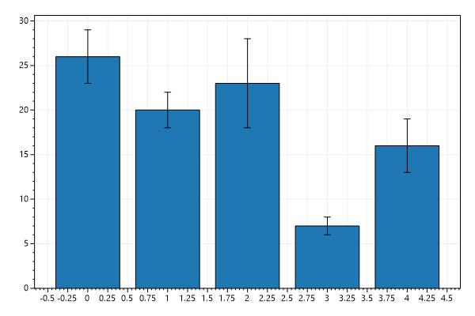</div>
<h2><a href='#bar_group' name='bar_group' style='color: black;'>Grouped Bar Graphs</a></h2>
By customizing positions of multiple bar plots you can achieve the appearance of grouped bar graphs. The AddBarGroups() method is designed to simplify this process. More advanced grouping and bar plot styling is possible using the Population plot type.
<pre class='prettyprint cs'>var plt = new ScottPlot.Plot(600, 400);

// generate random data to plot
int groupCount = 5;
Random rand = new Random(0);
double[] values1 = DataGen.RandomNormal(rand, groupCount, 20, 5);
double[] values2 = DataGen.RandomNormal(rand, groupCount, 20, 5);
double[] values3 = DataGen.RandomNormal(rand, groupCount, 20, 5);
double[] errors1 = DataGen.RandomNormal(rand, groupCount, 5, 2);
double[] errors2 = DataGen.RandomNormal(rand, groupCount, 5, 2);
double[] errors3 = DataGen.RandomNormal(rand, groupCount, 5, 2);

// group all data together
string[] groupNames = { "Group A", "Group B", "Group C", "Group D", "Group E" };
string[] seriesNames = { "Series 1", "Series 2", "Series 3" };
double[][] valuesBySeries = { values1, values2, values3 };
double[][] errorsBySeries = { errors1, errors2, errors3 };

// add the grouped bar plots and show a legend
plt.AddBarGroups(groupNames, seriesNames, valuesBySeries, errorsBySeries);
plt.Legend(location: Alignment.UpperRight);

// adjust axis limits so there is no padding below the bar graph
plt.SetAxisLimits(yMin: 0);

plt.SaveFig("bar_group.png");</pre>
<div class='center'>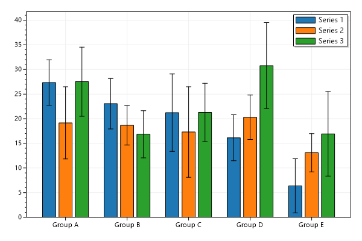</div>
<h2><a href='#bar_horizontal' name='bar_horizontal' style='color: black;'>Horizontal Bar Graph</a></h2>
Bar graphs are typically displayed as columns, but it's possible to show bars as rows.
<pre class='prettyprint cs'>var plt = new ScottPlot.Plot(600, 400);

// create sample data
double[] values = { 26, 20, 23, 7, 16 };
double[] errors = { 3, 2, 5, 1, 3 };
double[] positions = { 1, 2, 3, 4, 5 };

// add a bar graph to the plot and customize it to render horizontally
var bar = plt.AddBar(values, errors, positions);
bar.VerticalOrientation = false;

// adjust axis limits so there is no padding to the left of the bar graph
plt.SetAxisLimits(xMin: 0);

plt.SaveFig("bar_horizontal.png");</pre>
<div class='center'>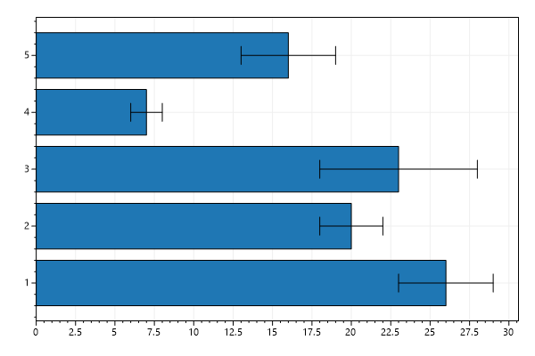</div>
<h2><a href='#bar_pattern' name='bar_pattern' style='color: black;'>Bar Fill Pattern</a></h2>
Bar graph fill pattern can be customized.
<pre class='prettyprint cs'>var plt = new ScottPlot.Plot(600, 400);

var bar1 = plt.AddBar(new double[] { 10, 13, 15 }, new double[] { 1, 5, 9 });
bar1.HatchStyle = Drawing.HatchStyle.StripedUpwardDiagonal;
bar1.FillColor = Color.Gray;
bar1.FillColorHatch = Color.Black;
bar1.Label = "Series 1";

var bar2 = plt.AddBar(new double[] { 14, 15, 9 }, new double[] { 2, 6, 10 });
bar2.HatchStyle = Drawing.HatchStyle.StripedWideDownwardDiagonal;
bar2.FillColor = Color.DodgerBlue;
bar2.FillColorHatch = Color.DeepSkyBlue;
bar2.Label = "Series 2";

var bar3 = plt.AddBar(new double[] { 13, 6, 14 }, new double[] { 3, 7, 11 });
bar3.HatchStyle = Drawing.HatchStyle.LargeCheckerBoard;
bar3.FillColor = Color.SeaGreen;
bar3.FillColorHatch = Color.DarkSeaGreen;
bar3.Label = "Series 3";

// add a legend to display each labeled bar plot
plt.Legend(location: Alignment.UpperRight);

// adjust axis limits so there is no padding below the bar graph
plt.SetAxisLimits(yMin: 0, yMax: 20);

plt.SaveFig("bar_pattern.png");</pre>
<div class='center'>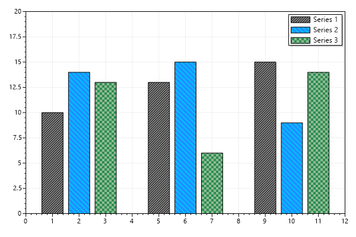</div>
<h2><a href='#bar_positions' name='bar_positions' style='color: black;'>Bar Graph with Defined Positions</a></h2>
Horizontal positions for each bar can be defined manually. If you define bar positions, you will probably want to define the bar width as well.
<pre class='prettyprint cs'>var plt = new ScottPlot.Plot(600, 400);

// create sample data
double[] values = { 26, 20, 23, 7, 16 };
double[] positions = { 10, 20, 30, 40, 50 };

// add a bar graph to the plot
var bar = plt.AddBar(values, positions);

// customize the width of bars (80% of the inter-position distance looks good)
bar.BarWidth = (positions[1] - positions[0]) * .8;

// adjust axis limits so there is no padding below the bar graph
plt.SetAxisLimits(yMin: 0);

plt.SaveFig("bar_positions.png");</pre>
<div class='center'>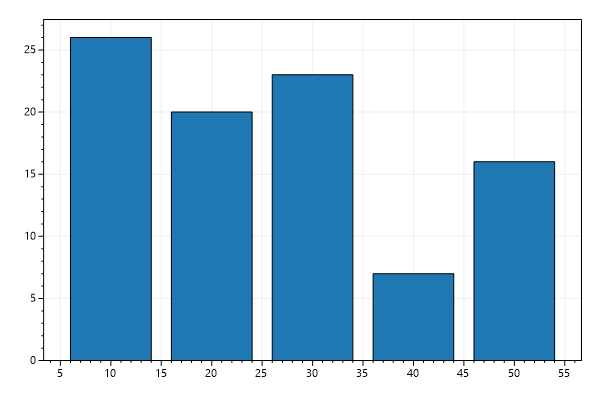</div>
<h2><a href='#bar_quickstart' name='bar_quickstart' style='color: black;'>Bar Graph</a></h2>
A simple bar graph can be created from a series of values. By default values are palced at X positions 0, 1, 2, etc.
<pre class='prettyprint cs'>var plt = new ScottPlot.Plot(600, 400);

// create sample data
double[] values = { 26, 20, 23, 7, 16 };

// add a bar graph to the plot
plt.AddBar(values);

// adjust axis limits so there is no padding below the bar graph
plt.SetAxisLimits(yMin: 0);

plt.SaveFig("bar_quickstart.png");</pre>
<div class='center'>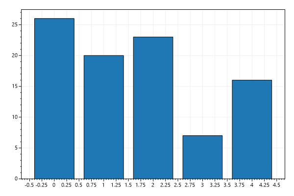</div>
<h2><a href='#bar_stacked' name='bar_stacked' style='color: black;'>Stacked Bar Graphs</a></h2>
Bars can be overlapped to give the appearance of stacking.
<pre class='prettyprint cs'>var plt = new ScottPlot.Plot(600, 400);

// create sample data
double[] valuesA = { 1, 2, 3, 2, 1, 2, 1 };
double[] valuesB = { 3, 3, 2, 1, 3, 2, 1 };

// to simulate stacking B on A, shift B up by A
double[] valuesB2 = new double[valuesB.Length];
for (int i = 0; i < valuesB.Length; i++)
    valuesB2[i] = valuesA[i] + valuesB[i];

// plot the bar charts in reverse order (highest first)
plt.AddBar(valuesB2);
plt.AddBar(valuesA);

// adjust axis limits so there is no padding below the bar graph
plt.SetAxisLimits(yMin: 0);

plt.SaveFig("bar_stacked.png");</pre>
<div class='center'>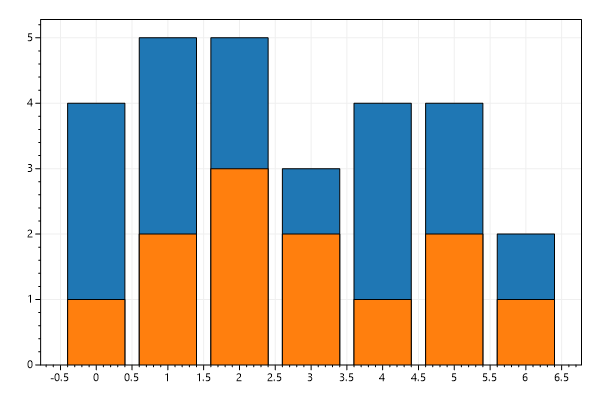</div>
<h2><a href='#bar_values' name='bar_values' style='color: black;'>Values Above Bars</a></h2>
The value of each bar can be displayed above it.
<pre class='prettyprint cs'>var plt = new ScottPlot.Plot(600, 400);

// create sample data
double[] values = { 27.3, 23.1, 21.2, 16.1, 6.4, 19.2, 18.7, 17.3, 20.3, 13.1 };

// add a bar graph to the plot and enable values to be displayed above each bar
var bar = plt.AddBar(values);
bar.ShowValuesAboveBars = true;

// adjust axis limits so there is no padding below the bar graph
plt.SetAxisLimits(yMin: 0);

plt.SaveFig("bar_values.png");</pre>
<div class='center'>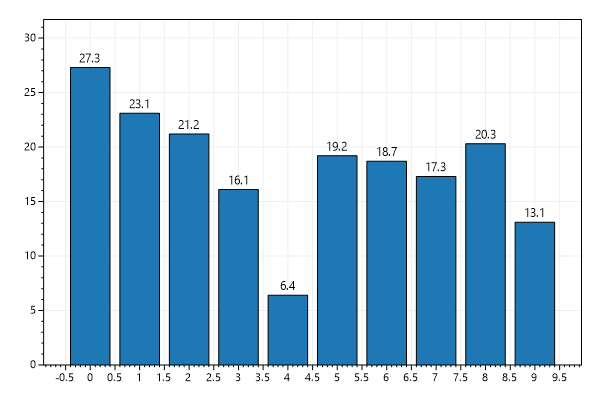</div>
<h2><a href='#bar_waterfall' name='bar_waterfall' style='color: black;'>Waterfall Bar Graph</a></h2>
Waterfall bar graphs use bars to represent changes in value from the previous level. This style graph can be created by offseting each bar by the sum of all bars preceeding it. This effect is similar to financial plots (OHLC and Candlestick) which are described in another section.
<pre class='prettyprint cs'>var plt = new ScottPlot.Plot(600, 400);

double[] values = DataGen.RandomNormal(0, 12, 5, 10);
double[] offsets = Enumerable.Range(0, values.Length).Select(x => values.Take(x).Sum()).ToArray();

var bar = plt.AddBar(values);
bar.YOffsets = offsets;
bar.FillColorNegative = Color.Red;
bar.FillColor = Color.Green;

plt.SaveFig("bar_waterfall.png");</pre>
<div class='center'>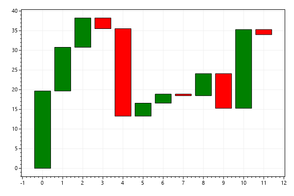</div>
<h2><a href='#bar_ynegcolor' name='bar_ynegcolor' style='color: black;'>Negative Bar Colors</a></h2>
Bars with negative values can be colored differently than positive ones.
<pre class='prettyprint cs'>var plt = new ScottPlot.Plot(600, 400);

double[] values = { 23, -17, 19, -24, 22 };

var bar = plt.AddBar(values);
bar.FillColor = Color.Green;
bar.FillColorNegative = Color.Red;

plt.SaveFig("bar_yNegColor.png");</pre>
<div class='center'>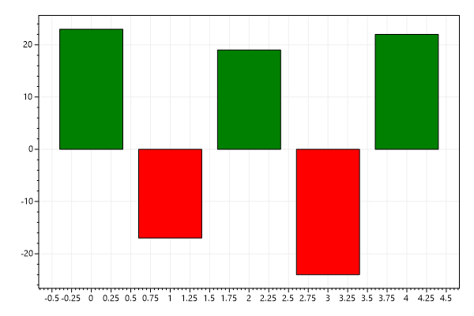</div>
<h2><a href='#bar_yoffset' name='bar_yoffset' style='color: black;'>Bars with Y Offsets</a></h2>
By default bar graphs start at 0, but this does not have to be the case. Y offsets can be defined for each bar. When Y offsets are used, values represent the height of the bars (relative to their offsets).
<pre class='prettyprint cs'>var plt = new ScottPlot.Plot(600, 400);

double[] values = { 23, 17, 19, 24, 22 };
double[] yOffsets = { -100, -100, -100, -100, -100 };

var bar = plt.AddBar(values);
bar.YOffsets = yOffsets;

// adjust axis limits so there is no padding below the bar graph
plt.SetAxisLimits(yMin: -100);

plt.SaveFig("bar_yoffset.png");</pre>
<div class='center'>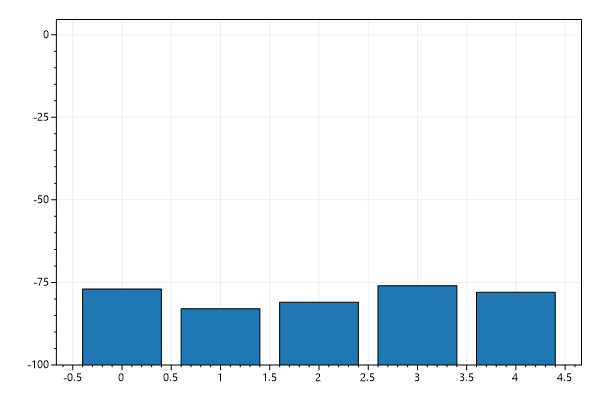</div>
<h2><a href='#colorbar_colormap' name='colorbar_colormap' style='color: black;'>Colorbar for Colormap</a></h2>
By default colorbars use the Viridis colormap, but this behavior can be customized and many colormaps are available.
<pre class='prettyprint cs'>var plt = new ScottPlot.Plot(600, 400);

plt.AddColorbar(Drawing.Colormap.Turbo);

plt.SaveFig("colorbar_colormap.png");</pre>
<div class='center'></div>
<h2><a href='#colorbar_quickstart' name='colorbar_quickstart' style='color: black;'>Colorbar</a></h2>
A colorbar displays a colormap beside the data area. Colorbars are typically added to plots containing heatmaps.
<pre class='prettyprint cs'>var plt = new ScottPlot.Plot(600, 400);

plt.AddColorbar();

plt.SaveFig("colorbar_quickstart.png");</pre>
<div class='center'></div>
<h2><a href='#colorbar_ticks' name='colorbar_ticks' style='color: black;'>Colorbar Ticks</a></h2>
Tick marks can be added to colorbars. Each tick is described by a position (a fraction of the distance from the bottom to the top) and a string (the tick label).
<pre class='prettyprint cs'>var plt = new ScottPlot.Plot(600, 400);

var cb = plt.AddColorbar();
cb.AddTick(0, "-123");
cb.AddTick(1, "+123");
cb.AddTick(.5, "0");
cb.AddTick(.25, "-61.5");
cb.AddTick(.75, "+61.5");

plt.SaveFig("colorbar_ticks.png");</pre>
<div class='center'></div>
<h2><a href='#fill_abovebelow' name='fill_abovebelow' style='color: black;'>Fill Above and Below</a></h2>
Sometimes you want to share the area under a curve, but change its color depending on which side of the baseline value it is. There's a helper method to make this easier.
<pre class='prettyprint cs'>var plt = new ScottPlot.Plot(600, 400);

// create sample data
Random rand = new Random(3);
double[] xs = DataGen.Consecutive(201);
double[] ys = DataGen.RandomWalk(rand, xs.Length);

// add filled polygons
plt.AddFillAboveAndBelow(xs, ys);

// tighten the axis limits so we don't see lines on the edges
plt.SetAxisLimits(xMin: 0, xMax: 200);

plt.SaveFig("fill_aboveBelow.png");</pre>
<div class='center'>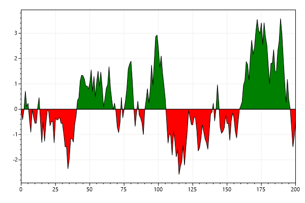</div>
<h2><a href='#fill_between' name='fill_between' style='color: black;'>Fill Between Curves</a></h2>
Given two curves, a polygon can be created to give the appearance of shading between them. Here we will display two scatter plots, then create a polygon to fill the region between them.
<pre class='prettyprint cs'>var plt = new ScottPlot.Plot(600, 400);

// create sample data
double[] xs = DataGen.Range(0, 10, .1, true);
double[] ys1 = DataGen.Sin(xs);
double[] ys2 = DataGen.Cos(xs);

// add a polygon to fill the region between the two curves
plt.AddFill(xs, ys1, xs, ys2);

// add two scatter plots the traditional way
plt.AddScatter(xs, ys1, color: Color.Black);
plt.AddScatter(xs, ys2, color: Color.Black);

// tighten the axis limits so we don't see lines on the edges
plt.SetAxisLimits(xMin: 0, xMax: 10);

plt.SaveFig("fill_between.png");</pre>
<div class='center'>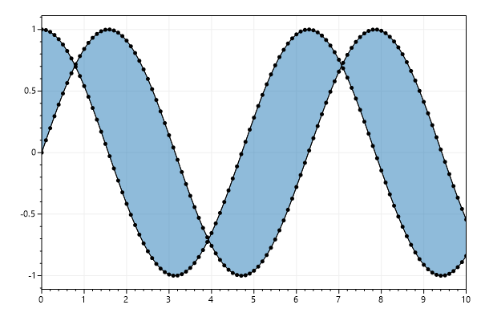</div>
<h2><a href='#fill_curve' name='fill_curve' style='color: black;'>Fill Under Curve</a></h2>
Fill methods help to create semitransparent polygons to fill the area under a curve. This can be used to give the appearance of shading under a scatter plot, even though the plottable created here is a polygon with optional edge color and fill color.
<pre class='prettyprint cs'>var plt = new ScottPlot.Plot(600, 400);

// create sample data
double[] xs = DataGen.Range(0, 10, .1, true);
double[] ys1 = DataGen.Sin(xs);
double[] ys2 = DataGen.Cos(xs);

// add filled polygons
plt.AddFill(xs, ys1);
plt.AddFill(xs, ys2, baseline: -.25);

// tighten the axis limits so we don't see lines on the edges
plt.SetAxisLimits(xMin: 0, xMax: 10);

plt.SaveFig("fill_curve.png");</pre>
<div class='center'>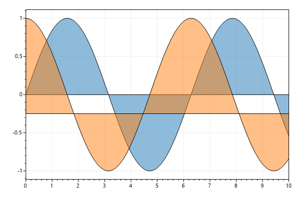</div>
<h2><a href='#finance_bollinger' name='finance_bollinger' style='color: black;'>Bollinger Bands</a></h2>
Bollinger bands are a common technical indicator that show the average +/- two times the standard deviation of a given time range preceeding it.
<pre class='prettyprint cs'>var plt = new ScottPlot.Plot(600, 400);

// generate sample stock prices
OHLC[] ohlcs = DataGen.RandomStockPrices(null, 100);
double[] xs = DataGen.Consecutive(ohlcs.Length);

// calculate the bands and the time range they cover
double[] xs2 = xs.Skip(20).ToArray();
(var sma, var bolL, var bolU) = Statistics.Finance.Bollinger(ohlcs, 20);

// plot technical indicators as scatter plots above the financial chart
plt.AddCandlesticks(ohlcs);
plt.AddScatter(xs2, sma, markerSize: 0, color: Color.Blue);
plt.AddScatter(xs2, bolL, markerSize: 0, color: Color.Blue, lineStyle: LineStyle.Dash);
plt.AddScatter(xs2, bolU, markerSize: 0, color: Color.Blue, lineStyle: LineStyle.Dash);

plt.SaveFig("finance_bollinger.png");</pre>
<div class='center'>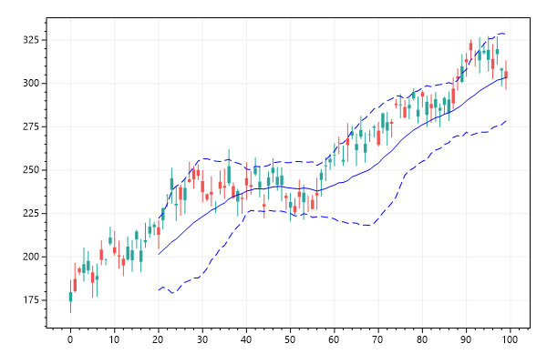</div>
<h2><a href='#finance_datetimeaxis' name='finance_datetimeaxis' style='color: black;'>Using a DateTime Axis</a></h2>
You probably never want to do this... but OHLCs have an X value you can customize to be a DateTime (converted to a double using DateTime.ToOATime()). The advantage is that you can use the native DateTime axis support on the horizontal axis. The disadvantage is that gaps in time appear as gaps in the candlesticks. Weekends without trading will appear as gaps. The alternative to this method is to plot a series of OHLCs using sequential numbers, then manually define the axis tick labels.
<pre class='prettyprint cs'>var plt = new ScottPlot.Plot(600, 400);

OHLC[] prices = DataGen.RandomStockPrices(null, 60, TimeSpan.FromDays(1));

// add the OHLCs to the plot and the horizontal axis to display DateTime tick labels
plt.AddCandlesticks(prices);
plt.XAxis.DateTimeFormat(true);

plt.SaveFig("finance_dateTimeAxis.png");</pre>
<div class='center'>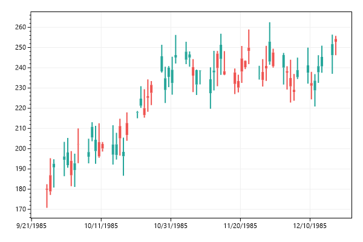</div>
<h2><a href='#finance_ohlc' name='finance_ohlc' style='color: black;'>OHLC Chart</a></h2>
OHLC charts are an alternative to candlestick charts. They show high and low prices as a vertical line, and indicate open and close prices with little ticks to the left and to the right.
<pre class='prettyprint cs'>var plt = new ScottPlot.Plot(600, 400);

OHLC[] prices = DataGen.RandomStockPrices(null, 60);
plt.AddOHLCs(prices);

plt.SaveFig("finance_ohlc.png");</pre>
<div class='center'>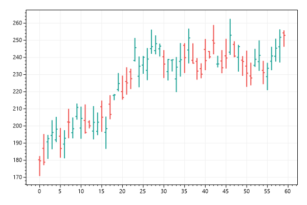</div>
<h2><a href='#finance_quickstart' name='finance_quickstart' style='color: black;'>Candlestick Chart</a></h2>
ScottPlot can draw some financial indicators on plots in X/Y space, but users looking to develop robust financial charts should probably look at other libraries designed specifically for financial charting. The biggest limitations are (1) lack of mouse interaction and (2) the horizontal axis is strictly numeric Cartesian space and is not ideal for plotting dates. That said, some financial charting is possible with ScottPlot, and this cookbook demonstrates common use cases.
<pre class='prettyprint cs'>var plt = new ScottPlot.Plot(600, 400);

// OHLCs are open, high, low, and closing prices for a time range.
OHLC[] prices = DataGen.RandomStockPrices(null, 60);
plt.AddCandlesticks(prices);

plt.SaveFig("finance_quickstart.png");</pre>
<div class='center'>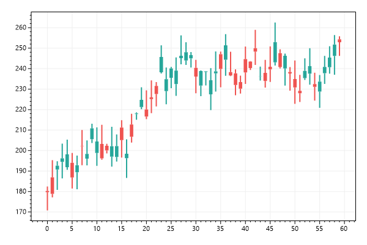</div>
<h2><a href='#finance_right' name='finance_right' style='color: black;'>Price on Right</a></h2>
Newer data appears on the ride side of the chart so financial charts are often displayed with the vertical axis label on the right side as well. This is possible by disabling the left vertical axis (YAxis) and enabling the right one (YAxis2)
<pre class='prettyprint cs'>var plt = new ScottPlot.Plot(600, 400);

OHLC[] prices = DataGen.RandomStockPrices(null, 30, TimeSpan.FromMinutes(5));
plt.AddCandlesticks(prices);
plt.XAxis.DateTimeFormat(true);

plt.YAxis.Ticks(false);
plt.YAxis2.Ticks(true);
plt.YAxis2.Label("Price (USD)");

plt.SaveFig("finance_right.png");</pre>
<div class='center'>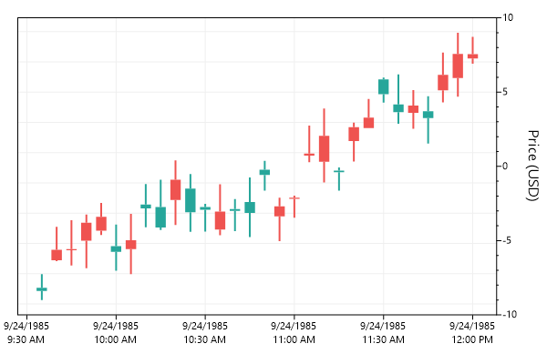</div>
<h2><a href='#finance_sma' name='finance_sma' style='color: black;'>Simple Moving Average (SMA)</a></h2>
A simple moving average (SMA) technical indicator can be calculated and drawn as a scatter plot.
<pre class='prettyprint cs'>var plt = new ScottPlot.Plot(600, 400);

// generate sample stock prices
OHLC[] ohlcs = DataGen.RandomStockPrices(null, 75);
double[] xs = DataGen.Consecutive(ohlcs.Length);

// calculate SMAs of different durations using helper methods
double[] sma8xs = xs.Skip(8).ToArray();
double[] sma8ys = Statistics.Finance.SMA(ohlcs, 8);
double[] sma20xs = xs.Skip(20).ToArray();
double[] sma20ys = Statistics.Finance.SMA(ohlcs, 20);

// plot technical indicators as scatter plots above the financial chart
plt.AddCandlesticks(ohlcs);
plt.AddScatter(sma8xs, sma8ys, markerSize: 0, color: Color.Blue, lineWidth: 2);
plt.AddScatter(sma20xs, sma20ys, markerSize: 0, color: Color.Navy, lineWidth: 2);

plt.SaveFig("finance_sma.png");</pre>
<div class='center'>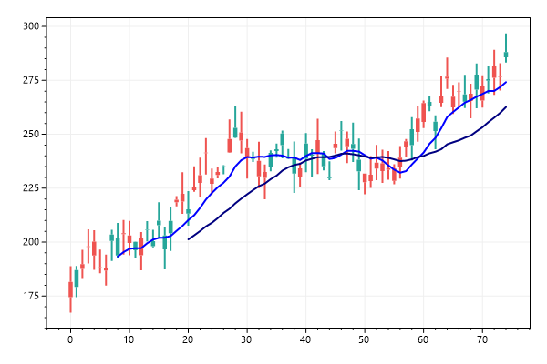</div>
<h2><a href='#finance_ticklabels' name='finance_ticklabels' style='color: black;'>Candlesticks with Custom Tick Labels</a></h2>
A better way to represent time on the horizontal axis is to use traditional Cartesian coordinates so each candlestick is placed at X positions (0, 1, 2, etc.), then manually define the locations and label text of important positions on the plot. This is clunky, but possible. This inelegance is why financial charting is probably best done with real financial charting libraries, not a scientific charting library like ScottPlot...
<pre class='prettyprint cs'>var plt = new ScottPlot.Plot(600, 400);

OHLC[] prices = DataGen.RandomStockPrices(null, 30);
plt.AddCandlesticks(prices);

// manually indicate where axis ticks should be and what their labels should say
double[] tickPositions = { 0, 6, 13, 20, 27 };
string[] tickLabels = { "Sep 23", "Sep 30", "Oct 7", "Oct 14", "Oct 21" };
plt.XTicks(tickPositions, tickLabels);

plt.SaveFig("finance_tickLabels.png");</pre>
<div class='center'>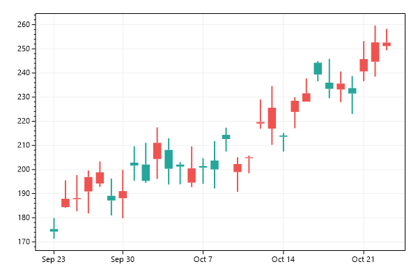</div>
<h2><a href='#function_quickstart' name='function_quickstart' style='color: black;'>Function</a></h2>
Function plots are defined by a function (not X/Y data points) so the curve is continuous and can be zoomed in and out infinitely
<pre class='prettyprint cs'>var plt = new ScottPlot.Plot(600, 400);

// Functions are defined as delegates with an input and output
var func1 = new Func<double, double?>((x) => Math.Sin(x) * Math.Sin(x / 2));
var func2 = new Func<double, double?>((x) => Math.Sin(x) * Math.Sin(x / 3));
var func3 = new Func<double, double?>((x) => Math.Cos(x) * Math.Sin(x / 5));

// Add functions to the plot
plt.AddFunction(func1, lineWidth: 2);
plt.AddFunction(func2, lineWidth: 2, lineStyle: LineStyle.Dot);
plt.AddFunction(func3, lineWidth: 2, lineStyle: LineStyle.Dash);

plt.SaveFig("function_quickstart.png");</pre>
<div class='center'>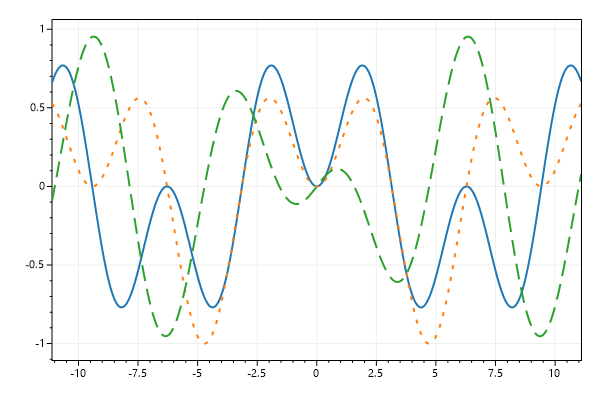</div>
<h2><a href='#heatmap_2dwaveform' name='heatmap_2dwaveform' style='color: black;'>2D Waveform</a></h2>
This example demonstrates a heatmap with 1000 tiles
<pre class='prettyprint cs'>var plt = new ScottPlot.Plot(600, 400);

int width = 100;
int height = 100;

double[,] intensities = new double[width, height];

for (int x = 0; x < width; x++)
    for (int y = 0; y < height; y++)
        intensities[x, y] = (Math.Sin(x * .2) + Math.Cos(y * .2)) * 100;

var hm = plt.AddHeatmap(intensities);
var cb = plt.AddColorbar(hm);

plt.SaveFig("heatmap_2dWaveform.png");</pre>
<div class='center'></div>
<h2><a href='#heatmap_colorbar' name='heatmap_colorbar' style='color: black;'>Heatmap with Colorbar</a></h2>
Colorbars are often added when heatmaps are used.
<pre class='prettyprint cs'>var plt = new ScottPlot.Plot(600, 400);

double[,] data2D = { { 1, 2, 3 },
         { 4, 5, 6 } };

var hm = plt.AddHeatmap(data2D);
var cb = plt.AddColorbar(hm);

plt.SaveFig("heatmap_colorbar.png");</pre>
<div class='center'></div>
<h2><a href='#heatmap_colormap' name='heatmap_colormap' style='color: black;'>Colormap</a></h2>
Viridis is the default colormap, but several alternatives are available.
<pre class='prettyprint cs'>var plt = new ScottPlot.Plot(600, 400);

double[,] intensities = new double[100, 100];
for (int x = 0; x < 100; x++)
    for (int y = 0; y < 100; y++)
        intensities[x, y] = (Math.Sin(x * .2) + Math.Cos(y * .2)) * 100;

var hm = plt.AddHeatmap(intensities, Drawing.Colormap.Turbo);
var cb = plt.AddColorbar(hm);

plt.SaveFig("heatmap_colormap.png");</pre>
<div class='center'></div>
<h2><a href='#heatmap_density' name='heatmap_density' style='color: black;'>Interpolation by Density</a></h2>
Heatmaps can be created from random 2D data points using the count within a square of fixed size.
<pre class='prettyprint cs'>var plt = new ScottPlot.Plot(600, 400);

Random rand = new Random(0);
int[] xs = DataGen.RandomNormal(rand, 10000, 25, 10).Select(x => (int)x).ToArray();
int[] ys = DataGen.RandomNormal(rand, 10000, 25, 10).Select(y => (int)y).ToArray();

double[,] intensities = Tools.XYToIntensities(mode: IntensityMode.Density,
    xs: xs, ys: ys, width: 50, height: 50, sampleWidth: 4);

var hm = plt.AddHeatmap(intensities);
var cb = plt.AddColorbar(hm);

plt.SaveFig("heatmap_density.png");</pre>
<div class='center'></div>
<h2><a href='#heatmap_gaussian' name='heatmap_gaussian' style='color: black;'>Gaussian Interpolation</a></h2>
Heatmaps can be created from 2D data points using bilinear interpolation with Gaussian weighting. This option results in a heatmap with a standard deviation of 4.
<pre class='prettyprint cs'>var plt = new ScottPlot.Plot(600, 400);

Random rand = new Random(0);
int[] xs = DataGen.RandomNormal(rand, 10000, 25, 10).Select(x => (int)x).ToArray();
int[] ys = DataGen.RandomNormal(rand, 10000, 25, 10).Select(y => (int)y).ToArray();

double[,] intensities = Tools.XYToIntensities(mode: IntensityMode.Gaussian,
    xs: xs, ys: ys, width: 50, height: 50, sampleWidth: 4);

var hm = plt.AddHeatmap(intensities);
var cb = plt.AddColorbar(hm);

plt.SaveFig("heatmap_gaussian.png");</pre>
<div class='center'></div>
<h2><a href='#heatmap_image' name='heatmap_image' style='color: black;'>Heatmap Image</a></h2>
Image data can be plotted using the heatmap plot type.
<pre class='prettyprint cs'>var plt = new ScottPlot.Plot(600, 400);

double[,] imageData = DataGen.SampleImageData();
plt.AddHeatmap(imageData);

plt.SaveFig("heatmap_image.png");</pre>
<div class='center'></div>
<h2><a href='#heatmap_limitscale' name='heatmap_limitscale' style='color: black;'>Scale Limits</a></h2>
Heatmap colormap scale can use a defined min/max value.
<pre class='prettyprint cs'>var plt = new ScottPlot.Plot(600, 400);

double[,] intensities = new double[100, 100];
for (int x = 0; x < 100; x++)
    for (int y = 0; y < 100; y++)
        intensities[x, y] = (Math.Sin(x * .2) + Math.Cos(y * .2)) * 100;

var hm = plt.AddHeatmap(intensities);
hm.Update(intensities, min: 0, max: 200);

var cb = plt.AddColorbar(hm);

plt.SaveFig("heatmap_limitScale.png");</pre>
<div class='center'></div>
<h2><a href='#heatmap_quickstart' name='heatmap_quickstart' style='color: black;'>Heatmap Quickstart</a></h2>
Heatmaps display a 2D array using a colormap.
<pre class='prettyprint cs'>var plt = new ScottPlot.Plot(600, 400);

double[,] data2D = { { 1, 2, 3 },
         { 4, 5, 6 } };

plt.AddHeatmap(data2D);

plt.SaveFig("heatmap_quickstart.png");</pre>
<div class='center'></div>
<h2><a href='#image_alignment' name='image_alignment' style='color: black;'>Image Alignment</a></h2>
By default the X/Y coordinates define the upper left position of the image, but alignment can be customized.
<pre class='prettyprint cs'>var plt = new ScottPlot.Plot(600, 400);

// display some sample data
plt.AddSignal(DataGen.Sin(51));
plt.AddSignal(DataGen.Cos(51));

// display an image with 3 different alignments
Bitmap monaLisa = DataGen.SampleImage();
var ip1 = new ScottPlot.Plottable.Image() { Bitmap = monaLisa, X = 10 };
var ip2 = new ScottPlot.Plottable.Image() { Bitmap = monaLisa, X = 25, Alignment = Alignment.MiddleCenter };
var ip3 = new ScottPlot.Plottable.Image() { Bitmap = monaLisa, X = 40, Alignment = Alignment.LowerRight };

plt.Add(ip1);
plt.Add(ip2);
plt.Add(ip3);

plt.AddPoint(ip1.X, ip1.Y, Color.Magenta, size: 20);
plt.AddPoint(ip2.X, ip2.Y, Color.Magenta, size: 20);
plt.AddPoint(ip3.X, ip3.Y, Color.Magenta, size: 20);

plt.SaveFig("image_alignment.png");</pre>
<div class='center'></div>
<h2><a href='#image_border' name='image_border' style='color: black;'>Image Border</a></h2>
The borders of images can be customized.
<pre class='prettyprint cs'>var plt = new ScottPlot.Plot(600, 400);

// display some sample data
plt.AddSignal(DataGen.Sin(51));
plt.AddSignal(DataGen.Cos(51));

// place an image on the plot
plt.Add(new ScottPlot.Plottable.Image()
{
    Bitmap = DataGen.SampleImage(),
    X = 10,
    Y = .5,
    Rotation = 30,
    BorderColor = Color.Magenta,
    BorderSize = 5,
});

plt.SaveFig("image_border.png");</pre>
<div class='center'></div>
<h2><a href='#image_quickstart' name='image_quickstart' style='color: black;'>Image Quickstart</a></h2>
The Image plottable places a Bitmap at a location in X/Y space.The image's position will move in space as the axes move, but the size of the bitmap will always be the same (matched to the display resolution). 
<pre class='prettyprint cs'>var plt = new ScottPlot.Plot(600, 400);

// display some sample data
plt.AddSignal(DataGen.Sin(51));
plt.AddSignal(DataGen.Cos(51));

// create the bitmap we want to display
Bitmap monaLisa = DataGen.SampleImage();

// create the image plottable and add it to the plot
var imagePlot = new ScottPlot.Plottable.Image() { Bitmap = monaLisa, X = 10, Y = .5 };

plt.Add(imagePlot);

plt.SaveFig("image_quickstart.png");</pre>
<div class='center'></div>
<h2><a href='#image_rotation' name='image_rotation' style='color: black;'>Image Rotation</a></h2>
Images can be rotated, but rotation is always relative to the upper left corner.
<pre class='prettyprint cs'>var plt = new ScottPlot.Plot(600, 400);

// display some sample data
plt.AddSignal(DataGen.Sin(51));
plt.AddSignal(DataGen.Cos(51));

// place a rotated image on the plot
Bitmap monaLisa = DataGen.SampleImage();
var ip1 = new ScottPlot.Plottable.Image() { Bitmap = monaLisa, X = 10, Y = .5, Rotation = 30 };
plt.Add(ip1);
plt.AddPoint(ip1.X, ip1.Y, color: Color.Magenta, size: 20);

plt.SaveFig("image_rotation.png");</pre>
<div class='center'></div>
<h2><a href='#misc_ap' name='misc_ap' style='color: black;'>Action Potential</a></h2>
The raw trace (voltage) and first derivative (voltage change / time) of a mammalian action potential.
<pre class='prettyprint cs'>var plt = new ScottPlot.Plot(600, 400);

// obtain a signal for the voltage
double[] ap = DataGen.ActionPotential();
plt.Title("Neuronal Action Potential");

// data is sampled at 20 kHz but we want to display ms units
int sampleRate = 20;
plt.XAxis.Label("Time (milliseconds)");

// plot the voltage in blue on the primary Y axis
var sig1 = plt.AddSignal(ap, sampleRate);
sig1.YAxisIndex = 0;
sig1.LineWidth = 3;
sig1.Color = Color.Blue;
plt.YAxis.Label("Membrane Potential (mV)");
plt.YAxis.Color(Color.Blue);

// calculate the first derivative
double[] deriv = new double[ap.Length];
for (int i = 1; i < deriv.Length; i++)
    deriv[i] = (ap[i] - ap[i - 1]) * sampleRate;
deriv[0] = deriv[1];

// plot the first derivative in red on the secondary Y axis
var sig2 = plt.AddSignal(deriv, sampleRate);
sig2.YAxisIndex = 1;
sig2.LineWidth = 3;
sig2.Color = Color.FromArgb(120, Color.Red);
plt.YAxis2.Label("Rate of Change (mV/ms)");
plt.YAxis2.Color(Color.Red);
plt.YAxis2.Ticks(true);

// zoom in on the interesting area
plt.SetAxisLimits(40, 60);

plt.SaveFig("misc_ap.png");</pre>
<div class='center'></div>
<h2><a href='#misc_interpolation' name='misc_interpolation' style='color: black;'>Spline Interpolation</a></h2>
Interpolated splines create curves with many X/Y points to smoothly connect a limited number of input points.
<pre class='prettyprint cs'>var plt = new ScottPlot.Plot(600, 400);

// create a small number of X/Y data points and display them
double[] xs = { 0, 10, 20, 30 };
double[] ys = { 65, 25, 55, 80 };
plt.AddScatter(xs, ys, Color.Black, markerSize: 10, lineWidth: 0, label: "Original Data");

// Calculate the interpolated splines using three different methods:
//   Natural splines are "stiffer" than a polynomial interpolations and are less likely to oscillate.
//   Periodic splines are natural splines whose first and last point slopes are matched.
//   End slope splines let you define first and last data point slopes (defaults to zero).
var nsi = new ScottPlot.Statistics.Interpolation.NaturalSpline(xs, ys, resolution: 20);
var psi = new ScottPlot.Statistics.Interpolation.PeriodicSpline(xs, ys, resolution: 20);
var esi = new ScottPlot.Statistics.Interpolation.EndSlopeSpline(xs, ys, resolution: 20);

// plot the interpolated Xs and Ys
plt.AddScatter(nsi.interpolatedXs, nsi.interpolatedYs, Color.Red, markerSize: 3, label: "Natural Spline");
plt.AddScatter(psi.interpolatedXs, psi.interpolatedYs, Color.Green, markerSize: 3, label: "Periodic Spline");
plt.AddScatter(esi.interpolatedXs, esi.interpolatedYs, Color.Blue, markerSize: 3, label: "End Slope Spline");

plt.Legend();

plt.SaveFig("misc_interpolation.png");</pre>
<div class='center'></div>
<h2><a href='#multiaxis_additional' name='multiaxis_additional' style='color: black;'>Additional Y Axis</a></h2>
Additional axes can be added on any edge. Additional axes stack away from the plot area.
<pre class='prettyprint cs'>var plt = new ScottPlot.Plot(600, 400);

// plot one set of data using the primary Y axis
var sigSmall = plt.AddSignal(DataGen.Sin(51, mult: 1));
sigSmall.YAxisIndex = 0;
plt.YAxis.Label("Primary Axis");
plt.YAxis.Color(sigSmall.Color);

// plot another set of data using an additional axis
var sigBig = plt.AddSignal(DataGen.Cos(51, mult: 100));
var yAxis3 = plt.AddAxis(Renderable.Edge.Left, axisIndex: 2);
sigBig.YAxisIndex = 2;
yAxis3.Label("Additional Axis");
yAxis3.Color(sigBig.Color);

plt.SaveFig("multiAxis_additional.png");</pre>
<div class='center'></div>
<h2><a href='#multiaxis_invisible' name='multiaxis_invisible' style='color: black;'>Axis Visibility</a></h2>
Visibility of axes can be toggled. In this example an additional Y axis is added but the primary Y axis is hidden. The result is a plot that appears to only have one Y axis.
<pre class='prettyprint cs'>var plt = new ScottPlot.Plot(600, 400);

// plot one set of data using the primary Y axis
var sigSmall = plt.AddSignal(DataGen.Sin(51, mult: 1));
sigSmall.YAxisIndex = 0;
plt.YAxis.Label("Primary Axis");
plt.YAxis.Color(sigSmall.Color);

// plot another set of data using an additional axis
var sigBig = plt.AddSignal(DataGen.Cos(51, mult: 100));
var yAxis3 = plt.AddAxis(Renderable.Edge.Left, axisIndex: 2);
sigBig.YAxisIndex = 2;
yAxis3.Label("Additional Axis");
yAxis3.Color(sigBig.Color);

// hide the primary Y axis
plt.YAxis.IsVisible = false;

plt.SaveFig("multiAxis_invisible.png");</pre>
<div class='center'></div>
<h2><a href='#multiaxis_primary' name='multiaxis_primary' style='color: black;'>Primary Axes</a></h2>
Plots always have 4 fundamental axes available to work with. Primary axes (XAxis and YAxis) are axis index 0. Secondary axes (XAxis2 and YAxis2) are axis index 1.By default primary axes are totally visible, and secondary axes have ticks hidden and no label. Sometimes the top axis (XAxis2) is given a label to simulate a plot title.
<pre class='prettyprint cs'>var plt = new ScottPlot.Plot(600, 400);

// plot one set of data using the primary Y axis
var sigSmall = plt.AddSignal(DataGen.Sin(51, mult: 1), sampleRate: 1);
sigSmall.YAxisIndex = 0;
sigSmall.XAxisIndex = 0;
plt.XAxis.Label("Primary X Axis");
plt.YAxis.Label("Secondary Y Axis");
plt.XAxis.Color(sigSmall.Color);
plt.YAxis.Color(sigSmall.Color);

// plot another set of data using the secondary axes
var sigBig = plt.AddSignal(DataGen.Cos(51, mult: 100), sampleRate: 100);
sigBig.YAxisIndex = 1;
sigBig.XAxisIndex = 1;
plt.YAxis2.Ticks(true); // ticks weren't visible by default
plt.XAxis2.Ticks(true); // ticks weren't visible by default
plt.YAxis2.Color(sigBig.Color);
plt.XAxis2.Color(sigBig.Color);
plt.YAxis2.Label("Secondary Y Axis");
plt.XAxis2.Label("Secondary X Axis");

plt.SaveFig("multiAxis_primary.png");</pre>
<div class='center'></div>
<h2><a href='#multiaxis_right' name='multiaxis_right' style='color: black;'>Right Y Axis</a></h2>
This example shows how to display a Y axis only on the right side.
<pre class='prettyprint cs'>var plt = new ScottPlot.Plot(600, 400);

double[] values = DataGen.RandomWalk(100);
plt.AddSignal(values);

plt.YAxis.Ticks(false);
plt.YAxis2.Ticks(true);
plt.YAxis2.Label("Value");
plt.XAxis.Label("Sample Number");

plt.SaveFig("multiAxis_right.png");</pre>
<div class='center'></div>
<h2><a href='#pie_customlabels' name='pie_customlabels' style='color: black;'>Custom Slice Labels</a></h2>
Custom slice labels can be used to display values using custom formats
<pre class='prettyprint cs'>var plt = new ScottPlot.Plot(600, 400);

double[] values = { 778, 43, 283, 76, 184 };
string[] labels = { "C#", "JAVA", "Python", "F#", "PHP" };

// modify labels to include a custom formatted value
labels = Enumerable.Range(0, values.Length)
       .Select(i => $"{labels[i]}\n({values[i]})")
       .ToArray();

var pie = plt.AddPie(values);
pie.GroupNames = labels;
pie.ShowLabels = true;

plt.SaveFig("pie_customLabels.png");</pre>
<div class='center'>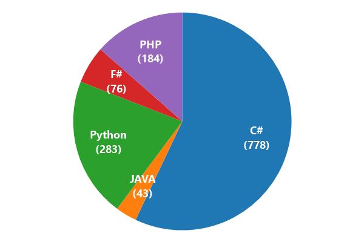</div>
<h2><a href='#pie_donut' name='pie_donut' style='color: black;'>Donut Chart</a></h2>
Donut plots are pie charts with a hollow center.
<pre class='prettyprint cs'>var plt = new ScottPlot.Plot(600, 400);

double[] values = { 778, 283, 184, 76, 43 };
var pie = plt.AddPie(values);
pie.Explode = true;
pie.DonutSize = .6;

plt.SaveFig("pie_donut.png");</pre>
<div class='center'></div>
<h2><a href='#pie_donuttext' name='pie_donuttext' style='color: black;'>Donut with Text</a></h2>
Custom text can be displayed in the center of a donut chart. Notice too how the colors of each slice are customized in this example.
<pre class='prettyprint cs'>var plt = new ScottPlot.Plot(600, 400);

double[] values = { 779, 586 };
string centerText = $"{values[0] / values.Sum() * 100:00.0}%";
Color color1 = Color.FromArgb(255, 0, 150, 200);
Color color2 = Color.FromArgb(100, 0, 150, 200);

var pie = plt.AddPie(values);
pie.DonutSize = .6;
pie.DonutLabel = centerText;
pie.CenterFont.Color = color1;
pie.OutlineSize = 2;
pie.SliceFillColors = new Color[] { color1, color2 };

plt.SaveFig("pie_donutText.png");</pre>
<div class='center'>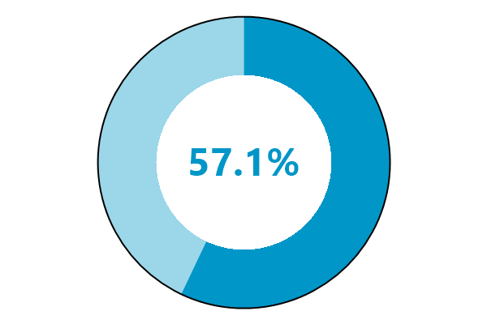</div>
<h2><a href='#pie_exploded' name='pie_exploded' style='color: black;'>Exploded Pie Chart</a></h2>
Exploded pie charts have a bit of space between their slices.
<pre class='prettyprint cs'>var plt = new ScottPlot.Plot(600, 400);

double[] values = { 778, 283, 184, 76, 43 };
var pie = plt.AddPie(values);
pie.Explode = true;

plt.SaveFig("pie_exploded.png");</pre>
<div class='center'></div>
<h2><a href='#pie_legend' name='pie_legend' style='color: black;'>Slices in Legend</a></h2>
Slices can be labeled in the legend.
<pre class='prettyprint cs'>var plt = new ScottPlot.Plot(600, 400);

double[] values = { 778, 43, 283, 76, 184 };
string[] labels = { "C#", "JAVA", "Python", "F#", "PHP" };
var pie = plt.AddPie(values);
pie.GroupNames = labels;
plt.Legend();

plt.SaveFig("pie_legend.png");</pre>
<div class='center'></div>
<h2><a href='#pie_quickstart' name='pie_quickstart' style='color: black;'>Pie Chart</a></h2>
A pie chart illustrates numerical proportions as slices of a circle.
<pre class='prettyprint cs'>var plt = new ScottPlot.Plot(600, 400);

double[] values = { 778, 283, 184, 76, 43 };
plt.AddPie(values);

plt.SaveFig("pie_quickstart.png");</pre>
<div class='center'></div>
<h2><a href='#pie_showeverything' name='pie_showeverything' style='color: black;'>Label Everything</a></h2>
Slices can labeled with values, percentages, and lables, with a legend.
<pre class='prettyprint cs'>var plt = new ScottPlot.Plot(600, 400);

double[] values = { 778, 43, 283, 76, 184 };
string[] labels = { "C#", "JAVA", "Python", "F#", "PHP" };
var pie = plt.AddPie(values);
pie.GroupNames = labels;
pie.ShowPercentages = true;
pie.ShowValues = true;
pie.ShowLabels = true;
plt.Legend();

plt.SaveFig("pie_showEverything.png");</pre>
<div class='center'>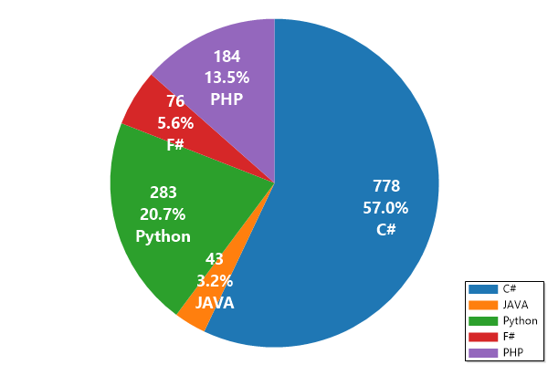</div>
<h2><a href='#pie_showpercentage' name='pie_showpercentage' style='color: black;'>Slice Percentages</a></h2>
The percentage of each slice can be displayed at its center.
<pre class='prettyprint cs'>var plt = new ScottPlot.Plot(600, 400);

double[] values = { 778, 43, 283, 76, 184 };
var pie = plt.AddPie(values);
pie.ShowPercentages = true;

plt.SaveFig("pie_showPercentage.png");</pre>
<div class='center'>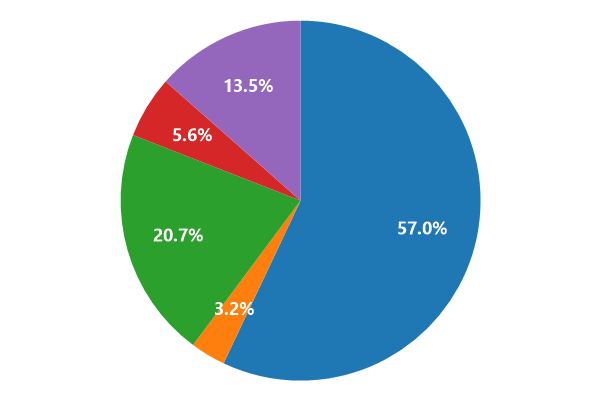</div>
<h2><a href='#pie_showvalues' name='pie_showvalues' style='color: black;'>Slice Values</a></h2>
The value of each slice can be displayed at its center.
<pre class='prettyprint cs'>var plt = new ScottPlot.Plot(600, 400);

double[] values = { 778, 43, 283, 76, 184 };
var pie = plt.AddPie(values);
pie.ShowValues = true;

plt.SaveFig("pie_showValues.png");</pre>
<div class='center'></div>
<h2><a href='#pie_slicelabels' name='pie_slicelabels' style='color: black;'>Slice Labels</a></h2>
The label for each slice can be displayed at its center.
<pre class='prettyprint cs'>var plt = new ScottPlot.Plot(600, 400);

double[] values = { 778, 43, 283, 76, 184 };
string[] labels = { "C#", "JAVA", "Python", "F#", "PHP" };
var pie = plt.AddPie(values);
pie.GroupNames = labels;
pie.ShowLabels = true;

plt.SaveFig("pie_sliceLabels.png");</pre>
<div class='center'>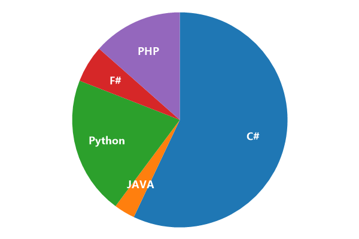</div>
<h2><a href='#plottable_arrow_quickstart' name='plottable_arrow_quickstart' style='color: black;'>Arrows</a></h2>
Arrows point to specific locations on the plot. Arrows are actually just scatter plots with two points and an arrowhead.
<pre class='prettyprint cs'>var plt = new ScottPlot.Plot(600, 400);

// plot some sample data
plt.AddSignal(DataGen.Sin(51));
plt.AddSignal(DataGen.Cos(51));

// add arrows using coordinates
plt.AddArrow(25, 0, 27, .2);
plt.AddArrow(27, -.25, 23, -.5, lineWidth: 10);

// the shape of the arrowhead can be adjusted
var skinny = plt.AddArrow(12, 1, 12, .5);
skinny.ArrowheadLength *= 2;

var fat = plt.AddArrow(20, .6, 20, 1);
fat.ArrowheadWidth *= 2; ;

plt.SaveFig("plottable_arrow_quickstart.png");</pre>
<div class='center'></div>
<h2><a href='#point_quickstart' name='point_quickstart' style='color: black;'>Point</a></h2>
You can add a single point to the plot. A point is really a scatter plot with a single X/Y coordinate.
<pre class='prettyprint cs'>var plt = new ScottPlot.Plot(600, 400);

// add sample data
Color clearGray = Color.FromArgb(20, Color.Black);
plt.AddSignal(DataGen.Sin(51), color: clearGray);
plt.AddSignal(DataGen.Cos(51), color: clearGray);

// add a few points around the plot
plt.AddPoint(5, .5);
plt.AddPoint(31, 1);
plt.AddPoint(42, -.25);

// add points using optional arguments for customization
plt.AddPoint(7, .15, Color.Magenta, size: 20, shape: MarkerShape.openDiamond);
plt.AddPoint(23, -1, Color.Navy, size: 20, shape: MarkerShape.filledSquare);
plt.AddPoint(37, .3, Color.Red, size: 20, shape: MarkerShape.triUp);

plt.SaveFig("point_quickstart.png");</pre>
<div class='center'></div>
<h2><a href='#polygon_filledlineplot' name='polygon_filledlineplot' style='color: black;'>Filled Line Plot</a></h2>
Polygons can be used to create 2D shapes resembling filled line plots. When mixed with semitransprent fills, these can be useful for displaying data.
<pre class='prettyprint cs'>var plt = new ScottPlot.Plot(600, 400);

// create sample data
double[] xs = { 1, 2, 3, 4 };
double[] ys1 = { 1, 3, 1, 2 };
double[] ys2 = { 3, 7, 3, 1 };
double[] ys3 = { 5, 2, 5, 6 };

// pad data to turn a line into a shaded region
xs = Tools.Pad(xs, cloneEdges: true);
ys1 = Tools.Pad(ys1);
ys2 = Tools.Pad(ys2);
ys3 = Tools.Pad(ys3);

// plot the padded data points as polygons
plt.AddPolygon(xs, ys3, plt.GetNextColor(.7), lineWidth: 2);
plt.AddPolygon(xs, ys2, plt.GetNextColor(.7), lineWidth: 2);
plt.AddPolygon(xs, ys1, plt.GetNextColor(.7), lineWidth: 2);

// use tight margins so we don't see the edges of polygons
plt.AxisAuto(0, 0);

plt.SaveFig("polygon_filledLinePlot.png");</pre>
<div class='center'></div>
<h2><a href='#polygon_polygons' name='polygon_polygons' style='color: black;'>Many Polygons</a></h2>
Special rendering optimizations are available to display a large number of polygons.
<pre class='prettyprint cs'>var plt = new ScottPlot.Plot(600, 400);

// create a list of random polygons
List<List<(double x, double y)>> polys = new List<List<(double x, double y)>>();
int polygonCount = 5_000;
int pointsPerPolygon = 100;
Random rand = new Random(0);
for (int i = 0; i < polygonCount; i++)
{
    // random placement
    double polyX = rand.NextDouble() * 100;
    double polyY = rand.NextDouble() * 100;

    // points are random locations around a circle of random size
    double polyR = rand.NextDouble();
    double[] xs = Enumerable.Range(0, pointsPerPolygon).Select(x => polyR * Math.Cos(2.0 * Math.PI * x / pointsPerPolygon) + polyX).ToArray();
    double[] ys = Enumerable.Range(0, pointsPerPolygon).Select(x => polyR * Math.Sin(2.0 * Math.PI * x / pointsPerPolygon) + polyY).ToArray();

    // add this polygon to the list
    List<(double x, double y)> thisPolygon = xs.Zip(ys, (xp, yp) => (xp, yp)).ToList();
    polys.Add(thisPolygon);
}

// plot the list of polygons with one step
plt.AddPolygons(polys, fillColor: Color.Green);

// ensure X and Y pixel scales are the same (so circles aren't ovals)
plt.AxisScaleLock(true);

plt.SaveFig("polygon_polygons.png");</pre>
<div class='center'></div>
<h2><a href='#polygon_quickstart' name='polygon_quickstart' style='color: black;'>Polygon Quickstart</a></h2>
Polygons are 2D shapes made from pairs of X/Y points. The last point connects back to the first point, forming a closed shape. Polygons can be optionally outlined and optionally filled. Colors with semitransparency are especially useful for polygons.
<pre class='prettyprint cs'>var plt = new ScottPlot.Plot(600, 400);

double[] xs1 = { 2, 8, 6, 4 };
double[] ys1 = { 3, 4, 0.5, 1 };
plt.AddPolygon(xs1, ys1);

double[] xs2 = { 3, 2.5, 5 };
double[] ys2 = { 4.5, 1.5, 2.5 };
plt.AddPolygon(xs2, ys2, plt.GetNextColor(.5), lineWidth: 2);

plt.SaveFig("polygon_quickstart.png");</pre>
<div class='center'></div>
<h2><a href='#polygon_stackedfilledlineplot' name='polygon_stackedfilledlineplot' style='color: black;'>Stacked Filled Line Plot</a></h2>
A stacked filled line plot effect can be achieved by overlapping polygons.
<pre class='prettyprint cs'>var plt = new ScottPlot.Plot(600, 400);

// create sample data
double[] xs = { 1, 2, 3, 4 };
double[] ys1 = { 1, 3, 1, 2 };
double[] ys2 = { 3, 7, 3, 1 };
double[] ys3 = { 5, 2, 5, 6 };

// manually stack plots
ys2 = Enumerable.Range(0, ys2.Length).Select(x => ys2[x] + ys1[x]).ToArray();
ys3 = Enumerable.Range(0, ys2.Length).Select(x => ys3[x] + ys2[x]).ToArray();

// pad data to turn a line into a shaded region
xs = Tools.Pad(xs, cloneEdges: true);
ys1 = Tools.Pad(ys1);
ys2 = Tools.Pad(ys2);
ys3 = Tools.Pad(ys3);

// plot the padded data points as polygons
plt.AddPolygon(xs, ys3, lineWidth: 2);
plt.AddPolygon(xs, ys2, lineWidth: 2);
plt.AddPolygon(xs, ys1, lineWidth: 2);

// use tight margins so we don't see the edges of polygons
plt.AxisAuto(0, 0);

plt.SaveFig("polygon_stackedFilledLinePlot.png");</pre>
<div class='center'></div>
<h2><a href='#population_advanced' name='population_advanced' style='color: black;'>Advanced Population Styling</a></h2>
Populations can be displayed many different ways. Scatter values can be displayed on either side of the bar or bar. Populations can be shown as bar graphs instead of box plots. Public fields allow many additional customizations.
<pre class='prettyprint cs'>var plt = new ScottPlot.Plot(600, 400);

// create sample data to represent test scores
Random rand = new Random(0);
double[] scoresA = DataGen.RandomNormal(rand, 35, 72, 7);
double[] scoresB = DataGen.RandomNormal(rand, 42, 57, 10);
double[] scoresC = DataGen.RandomNormal(rand, 23, 79, 5);

// To create a population series we need to start with an array of populations.
// In this example each population series just has one population in it.
var popsA = new Statistics.Population[] { new Statistics.Population(scoresA) };
var popsB = new Statistics.Population[] { new Statistics.Population(scoresB) };
var popsC = new Statistics.Population[] { new Statistics.Population(scoresC) };

// create a PopulationSeries for each set of scores, naming it in the process
var seriesA = new Statistics.PopulationSeries(popsA, "Class A");
var seriesB = new Statistics.PopulationSeries(popsB, "Class B");
var seriesC = new Statistics.PopulationSeries(popsC, "Class C");
var seriesArray = new Statistics.PopulationSeries[] { seriesA, seriesB, seriesC };

// create a MultiSeries object by passing in the array of series objects and plot it
var multiSeries = new Statistics.PopulationMultiSeries(seriesArray);
var popPlot = plt.AddPopulations(multiSeries);

// now customize its public fields to extensively customize its display options
popPlot.DistributionCurve = true;
popPlot.DistributionCurveLineStyle = LineStyle.Dash;
popPlot.ScatterOutlineColor = System.Drawing.Color.Transparent;
popPlot.DataFormat = ScottPlot.Plottable.PopulationPlot.DisplayItems.ScatterAndBox;
popPlot.DataBoxStyle = ScottPlot.Plottable.PopulationPlot.BoxStyle.BarMeanStDev;

// colors are managed at the population series level:
foreach (var popSeries in popPlot.MultiSeries.multiSeries)
    popSeries.color = Tools.GetRandomColor(rand);

// improve the style of the plot
plt.Legend(location: Alignment.LowerLeft);
plt.XAxis.Ticks(false);
plt.XAxis.Grid(false);
plt.YAxis.MajorGrid(lineStyle: LineStyle.Dot);
plt.SetAxisLimits(yMin: 0);

plt.SaveFig("population_advanced.png");</pre>
<div class='center'></div>
<h2><a href='#population_multiple' name='population_multiple' style='color: black;'>Multiple Populations</a></h2>
Multiple populations can be assembled into an array and plotted as a single group.
<pre class='prettyprint cs'>var plt = new ScottPlot.Plot(600, 400);

// create sample data to represent test scores
Random rand = new Random(0);
double[] valuesA = DataGen.RandomNormal(rand, 35, 85, 5);
double[] valuesB = DataGen.RandomNormal(rand, 42, 87, 3);
double[] valuesC = DataGen.RandomNormal(rand, 23, 92, 3);

// create population objects for each set of data values
var popA = new Statistics.Population(valuesA);
var popB = new Statistics.Population(valuesB);
var popC = new Statistics.Population(valuesC);

// combine several populations into an array and plot it
var poulations = new Statistics.Population[] { popA, popB, popC };
string[] populationNames = { "Group A", "Group B", "Group C" };
plt.AddPopulations(poulations);

// improve the style of the plot
plt.XAxis.Grid(false);
plt.XTicks(populationNames);

plt.SaveFig("population_multiple.png");</pre>
<div class='center'></div>
<h2><a href='#population_multiseries' name='population_multiseries' style='color: black;'>Multiple Series</a></h2>
Multiple series of population groups can be plotted Here each group is clustered on the horizontal axis, and each series is given a different color and appears in the legend.
<pre class='prettyprint cs'>var plt = new ScottPlot.Plot(600, 400);

// Each class (A, B, C) is a series.
// Each semester (fall, spring, summer A, summer B) is a group.

// create sample data to represent test scores for each class in each semester
Random rand = new Random(0);
double[] scoresAfall = DataGen.RandomNormal(rand, 35, 85, 5);
double[] scoresBfall = DataGen.RandomNormal(rand, 42, 87, 5);
double[] scoresCfall = DataGen.RandomNormal(rand, 23, 82, 5);
double[] scoresAspring = DataGen.RandomNormal(rand, 35, 84, 3);
double[] scoresBspring = DataGen.RandomNormal(rand, 42, 88, 3);
double[] scoresCspring = DataGen.RandomNormal(rand, 23, 84, 3);
double[] scoresAsumA = DataGen.RandomNormal(rand, 35, 80, 5);
double[] scoresBsumA = DataGen.RandomNormal(rand, 42, 90, 5);
double[] scoresCsumA = DataGen.RandomNormal(rand, 23, 85, 5);
double[] scoresAsumB = DataGen.RandomNormal(rand, 35, 91, 2);
double[] scoresBsumB = DataGen.RandomNormal(rand, 42, 93, 2);
double[] scoresCsumB = DataGen.RandomNormal(rand, 23, 90, 2);

// Collect multiple populations into a PopulationSeries.
// All populations in a series will be styled the same and appear once in the legend.
var popsA = new Statistics.Population[] {
    new Statistics.Population(scoresAfall),
    new Statistics.Population(scoresAspring),
    new Statistics.Population(scoresAsumA),
    new Statistics.Population(scoresAsumB)
};

var popsB = new Statistics.Population[] {
    new Statistics.Population(scoresBfall),
    new Statistics.Population(scoresBspring),
    new Statistics.Population(scoresBsumA),
    new Statistics.Population(scoresBsumB)
};

var popsC = new Statistics.Population[] {
    new Statistics.Population(scoresCfall),
    new Statistics.Population(scoresCspring),
    new Statistics.Population(scoresCsumA),
    new Statistics.Population(scoresCsumB)
};

// create a population series for each array of populations and give it a label
var seriesA = new Statistics.PopulationSeries(popsA, "Class A");
var seriesB = new Statistics.PopulationSeries(popsB, "Class B");
var seriesC = new Statistics.PopulationSeries(popsC, "Class C");
var allSeries = new Statistics.PopulationSeries[] { seriesA, seriesB, seriesC };

// create a MultiSeries from multiple population series and plot it
var multiSeries = new Statistics.PopulationMultiSeries(allSeries);
plt.AddPopulations(multiSeries);

// improve the style of the plot
string[] groupNames = new string[] { "Fall", "Spring", "Summer A", "Summer B" };
plt.XTicks(groupNames);
plt.XAxis.Grid(false);
plt.Legend();

plt.SaveFig("population_multiSeries.png");</pre>
<div class='center'></div>
<h2><a href='#population_quickstart' name='population_quickstart' style='color: black;'>Population Plot</a></h2>
The population plot makes it easy to display populations as bar graphs, box-and-whisker plots, scattered values, or box plots and data points side-by-side. The population plot is different than using a box plot with an error bar in that you pass your original data into the population plot and it determines the standard deviation, standard error, quartiles, mean, median, outliers, etc., and you get to determine how to display these values.
<pre class='prettyprint cs'>var plt = new ScottPlot.Plot(600, 400);

// create sample data to represent test scores
Random rand = new Random(0);
double[] scores = DataGen.RandomNormal(rand, 35, 85, 5);

// First, create a Population object from your test scores
var pop = new Statistics.Population(scores);

// You can access population statistics as public fields
plt.Title($"Mean: {pop.mean} +/- {pop.stdErr}");

// You can plot a population
plt.AddPopulation(pop);

// improve the style of the plot
plt.XAxis.Ticks(true);
plt.XAxis.Grid(false);

plt.SaveFig("population_quickstart.png");</pre>
<div class='center'></div>
<h2><a href='#quickstart_add' name='quickstart_add' style='color: black;'>Manually Add a Plottable</a></h2>
You can create a plot manually, then add it to the plot with Add(). This allows you to create custom plot types and add them to the plot.
<pre class='prettyprint cs'>var plt = new ScottPlot.Plot(600, 400);

double[] xs = DataGen.Consecutive(51);
double[] sin = DataGen.Sin(51);

// instantiate a plottable
var splt = new ScottPlot.Plottable.ScatterPlot(xs, sin);

// customize its style or change its data as desired
splt.Color = Color.Navy;
splt.MarkerSize = 10;
splt.MarkerShape = MarkerShape.filledDiamond;

// add it to the plot
plt.Add(splt);

plt.SaveFig("quickstart_add.png");</pre>
<div class='center'></div>
<h2><a href='#quickstart_axis' name='quickstart_axis' style='color: black;'>Axis Labels and Limits</a></h2>
Axis labels and limits can be customized
<pre class='prettyprint cs'>var plt = new ScottPlot.Plot(600, 400);

double[] time = DataGen.Consecutive(51);
double[] voltage = DataGen.Sin(51);
plt.AddScatter(time, voltage);

// Axes can be customized
plt.XAxis.Label("Time (milliseconds)");
plt.YAxis.Label("Voltage (mV)");
plt.XAxis2.Label("Important Experiment");

// Set axis limits to control the view
plt.SetAxisLimits(-20, 80, -2, 2);

plt.SaveFig("quickstart_axis.png");</pre>
<div class='center'></div>
<h2><a href='#quickstart_clear' name='quickstart_clear' style='color: black;'>Clear plottables</a></h2>
Call Clear() to remove all plottables from the plot. Overloads of Clear() allow you to remote one type of plottable, or a specific plottable.
<pre class='prettyprint cs'>var plt = new ScottPlot.Plot(600, 400);

double[] xs = DataGen.Consecutive(51);
double[] sin = DataGen.Sin(51);
double[] cos = DataGen.Sin(51);

plt.AddScatter(xs, sin, color: Color.Red);
plt.Clear();
plt.AddScatter(xs, cos, color: Color.Blue);

plt.SaveFig("quickstart_clear.png");</pre>
<div class='center'></div>
<h2><a href='#quickstart_scatter' name='quickstart_scatter' style='color: black;'>Scatter Plot</a></h2>
Scatter plots have paired X/Y points.
<pre class='prettyprint cs'>var plt = new ScottPlot.Plot(600, 400);

// sample data
double[] xs = DataGen.Consecutive(51);
double[] sin = DataGen.Sin(51);
double[] cos = DataGen.Cos(51);

// plot the data
plt.AddScatter(xs, sin);
plt.AddScatter(xs, cos);

// customize the axis labels
plt.Title("ScottPlot Quickstart");
plt.XLabel("Horizontal Axis");
plt.YLabel("Vertical Axis");

plt.SaveFig("quickstart_scatter.png");</pre>
<div class='center'></div>
<h2><a href='#quickstart_signal' name='quickstart_signal' style='color: black;'>Signal Plot</a></h2>
Signal plots have evenly spaced Y points. Signal plots are very fast and can interactively display millions of data points. There are many different types of plottable objects, each serving a different purpose.
<pre class='prettyprint cs'>var plt = new ScottPlot.Plot(600, 400);

double[] values = DataGen.RandomWalk(1_000_000);
plt.AddSignal(values, sampleRate: 48_000);
plt.Title("One Million Points");

plt.SaveFig("quickstart_signal.png");</pre>
<div class='center'></div>
<h2><a href='#radar_axislimits' name='radar_axislimits' style='color: black;'>Defined Axis Limits</a></h2>
Radar charts with independent axis limits use scales fitted to the data by default, but scaling can be controlled by defining the maximum value for each axis.
<pre class='prettyprint cs'>var plt = new ScottPlot.Plot(600, 400);

double[,] values = {
    { 5, 3, 10, 15, 3, 2, 256 },
    { 5, 2, 10, 10, 1, 4, 252 },
};

double[] maxValues = { 13, 15, 17, 15, 10, 10, 413 };

var radar = plt.AddRadar(values, independentAxes: true, maxValues: maxValues);
radar.CategoryLabels = new string[] { "Wins", "Poles", "Podiums", "Points Finishes", "DNFs", "Fastest Laps", "Points" };
radar.GroupLabels = new string[] { "Sebastian Vettel", "Fernando Alonso" };

// customize the plot
plt.Title("2010 Formula One World Championship");
plt.Legend();

/* Data represents the 2010 Formula One World Championship
 * https://en.wikipedia.org/wiki/2010_Formula_One_World_Championship
 * Note: Alonso did not finish (DNF) in the Malaysian GP, but was included 
 * here because he completed >90% of the race distance.
 *
 * Max values are based on https://en.wikipedia.org/wiki/List_of_Formula_One_World_Drivers%27_Champions.
 */

plt.SaveFig("radar_axisLimits.png");</pre>
<div class='center'>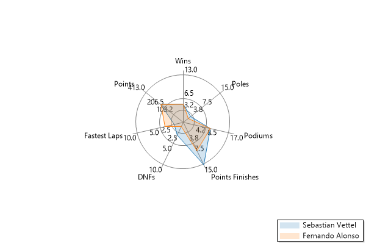</div>
<h2><a href='#radar_axisscaling' name='radar_axisscaling' style='color: black;'>Independent Axis Scaling</a></h2>
Axis scaling can be independent, allowing values for each category to be displayed using a different scale. When independent axis mode is enabled, axis limits are automatically adjusted to fit the range of the data.
<pre class='prettyprint cs'>var plt = new ScottPlot.Plot(600, 400);

double[,] values = { { 5, 3, 10, 15, 3, 2, 256 }, { 5, 2, 10, 10, 1, 4, 252 }, };

var radar = plt.AddRadar(values, independentAxes: true);
radar.CategoryLabels = new string[] { "Wins", "Poles", "Podiums", "Points Finishes", "DNFs", "Fastest Laps", "Points" };
radar.GroupLabels = new string[] { "Sebastian Vettel", "Fernando Alonso" };

// customize the plot
plt.Title("2010 Formula One World Championship");
plt.Legend();

/* Data represents the 2010 Formula One World Championship
 * https://en.wikipedia.org/wiki/2010_Formula_One_World_Championship
 * Note: Alonso did not finish (DNF) in the Malaysian GP, but was included 
 * here because he completed >90% of the race distance.
 */

plt.SaveFig("radar_axisScaling.png");</pre>
<div class='center'>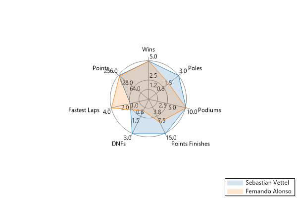</div>
<h2><a href='#radar_labelcategory' name='radar_labelcategory' style='color: black;'>Labeled Categories</a></h2>
Category labels can be displayed on the radar chart.
<pre class='prettyprint cs'>var plt = new ScottPlot.Plot(600, 400);

double[,] values = {
    { 5, 3, 10, 15, 3, 2, 256 },
    { 5, 2, 10, 10, 1, 4, 252 },
};

var radar = plt.AddRadar(values, independentAxes: true);
radar.CategoryLabels = new string[] { "Wins", "Poles", "Podiums", "Points Finishes", "DNFs", "Fastest Laps", "Points" };
radar.GroupLabels = new[] { "Sebastian Vettel", "Fernando Alonso" };
radar.ShowAxisValues = false;

// customize the plot
plt.Title("2010 Formula One World Championship");
plt.Legend();

/* Data represents the 2010 Formula One World Championship
 * https://en.wikipedia.org/wiki/2010_Formula_One_World_Championship
 * Note: Alonso did not finish (DNF) in the Malaysian GP, but was included 
 * here because he completed >90% of the race distance.
 */

plt.SaveFig("radar_labelCategory.png");</pre>
<div class='center'>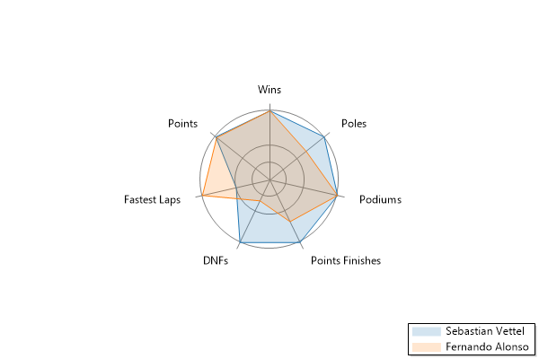</div>
<h2><a href='#radar_labelvalue' name='radar_labelvalue' style='color: black;'>Labeled Values</a></h2>
Labels can be displayed on the arms of the radar chart.
<pre class='prettyprint cs'>var plt = new ScottPlot.Plot(600, 400);

double[,] values = {
    { 5, 3, 10, 15, 3, 2 },
    { 5, 2, 10, 10, 1, 4 },
};

var radar = plt.AddRadar(values);
radar.CategoryLabels = new string[] { "Wins", "Poles", "Podiums", "Points Finishes", "DNFs", "Fastest Laps" };
radar.GroupLabels = new string[] { "Sebastian Vettel", "Fernando Alonso" };

// customize the plot
plt.Title("2010 Formula One World Championship");
plt.Legend();

/* Data represents the 2010 Formula One World Championship
 * https://en.wikipedia.org/wiki/2010_Formula_One_World_Championship
 * Note: Alonso did not finish (DNF) in the Malaysian GP, but was included 
 * here because he completed >90% of the race distance.
 */

plt.SaveFig("radar_labelValue.png");</pre>
<div class='center'>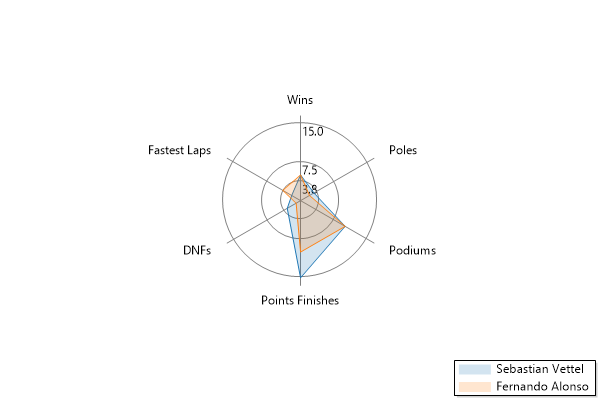</div>
<h2><a href='#radar_nolines' name='radar_nolines' style='color: black;'>No Axis Lines</a></h2>
A radar chart can have no drawn axis as well.
<pre class='prettyprint cs'>var plt = new ScottPlot.Plot(600, 400);

double[,] values = {
        { 78, 83, 84, 76, 43 },
        { 100, 50, 70, 60, 90 }
    };

var radarPlot = plt.AddRadar(values);
radarPlot.AxisType = RadarAxis.None;
radarPlot.ShowAxisValues = false;

plt.SaveFig("radar_noLines.png");</pre>
<div class='center'>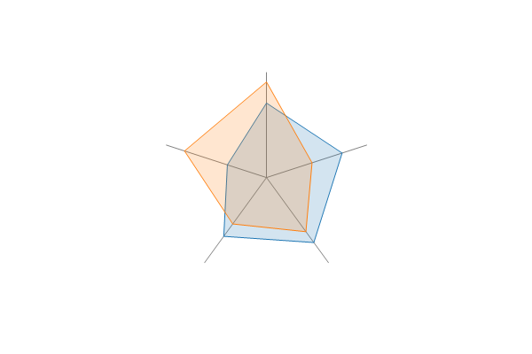</div>
<h2><a href='#radar_quickstart' name='radar_quickstart' style='color: black;'>Radar</a></h2>
A radar chart concisely displays multiple values. Radar plots are also called a spider charts or star charts.
<pre class='prettyprint cs'>var plt = new ScottPlot.Plot(600, 400);

double[,] values = {
    { 78,  83, 84, 76, 43 },
    { 100, 50, 70, 60, 90 }
};

plt.AddRadar(values);

// improve plot styling
plt.Frameless();
plt.Grid(enable: false);

plt.SaveFig("radar_quickstart.png");</pre>
<div class='center'>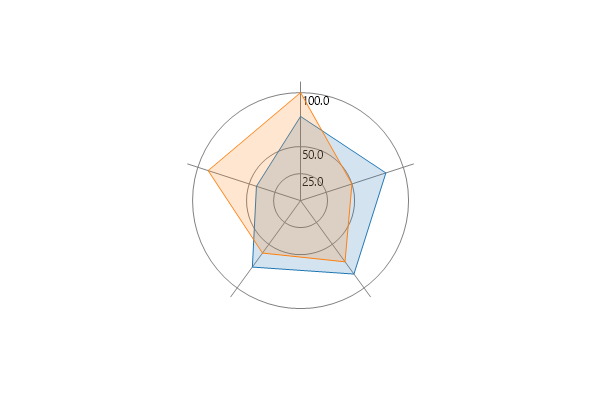</div>
<h2><a href='#radar_straightlines' name='radar_straightlines' style='color: black;'>Straight Axis Lines</a></h2>
Change the axis type to polygon to display radar charts with straight lines.
<pre class='prettyprint cs'>var plt = new ScottPlot.Plot(600, 400);

double[,] values = {
        { 78, 83, 84, 76, 43 },
        { 100, 50, 70, 60, 90 }
    };

var radarPlot = plt.AddRadar(values);
radarPlot.AxisType = RadarAxis.Polygon;

plt.SaveFig("radar_straightLines.png");</pre>
<div class='center'></div>
<h2><a href='#scalebar_horizontal' name='scalebar_horizontal' style='color: black;'>Horizontal Scale Bar</a></h2>
Set the vertical or horizontal sizer to zero and the scale bar will only span one dimension.
<pre class='prettyprint cs'>var plt = new ScottPlot.Plot(600, 400);

// plot sample data 
plt.AddSignal(DataGen.Sin(51));
plt.AddSignal(DataGen.Cos(51));

// remove horizontal scale only
plt.XAxis.Ticks(false);
plt.Frame(visible: false, left: true);
plt.Grid(enable: false);

// add a horizontal scale bar (no Y height)
plt.AddScaleBar(5, 0, "100 ms", null);

plt.SaveFig("scalebar_horizontal.png");</pre>
<div class='center'>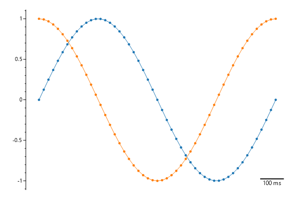</div>
<h2><a href='#scalebar_quickstart' name='scalebar_quickstart' style='color: black;'>Scale Bar</a></h2>
An L-shaped scalebar can be added in the corner of any plot. Set the vertical or horizontal sizer to zero and the scale bar will only span one dimension.
<pre class='prettyprint cs'>var plt = new ScottPlot.Plot(600, 400);

// plot sample data
plt.AddSignal(DataGen.Sin(51));
plt.AddSignal(DataGen.Cos(51));

// remove traditional scale indicators
plt.Grid(enable: false);
plt.Frameless();

// add an L-shaped scalebar
plt.AddScaleBar(5, .25, "100 ms", "250 mV");

plt.SaveFig("scalebar_quickstart.png");</pre>
<div class='center'>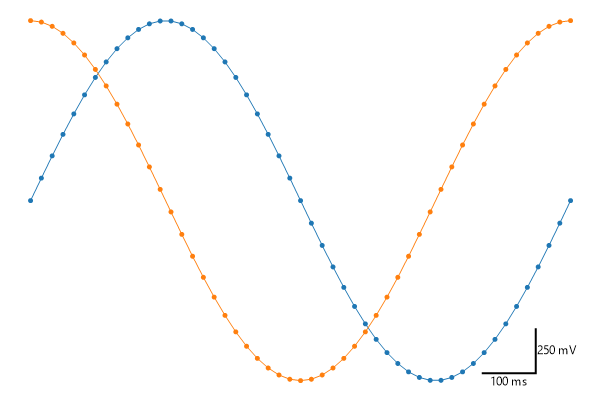</div>
<h2><a href='#scatter_errorbar' name='scatter_errorbar' style='color: black;'>Scatter Plot with Errorbars</a></h2>
An array of values can be supplied for error bars and redering options can be customized as desired
<pre class='prettyprint cs'>var plt = new ScottPlot.Plot(600, 400);

int pointCount = 20;
Random rand = new Random(0);
double[] xs = DataGen.Consecutive(pointCount);
double[] ys = DataGen.RandomWalk(rand, pointCount);
double[] xErr = DataGen.RandomNormal(rand, pointCount, .2);
double[] yErr = DataGen.RandomNormal(rand, pointCount);

var sp = plt.AddScatter(xs, ys);
sp.XError = xErr;
sp.YError = yErr;
sp.ErrorCapSize = 3;
sp.ErrorLineWidth = 1;
sp.LineStyle = LineStyle.Dot;

plt.SaveFig("scatter_errorbar.png");</pre>
<div class='center'>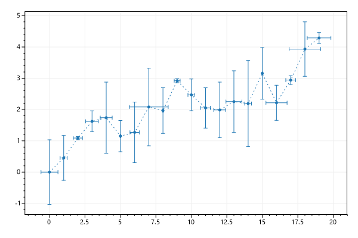</div>
<h2><a href='#scatter_linestyle' name='scatter_linestyle' style='color: black;'>Custom lines</a></h2>
Line color, size, and style can be customized. Setting markerSize to 0 prevents markers from being rendered.
<pre class='prettyprint cs'>var plt = new ScottPlot.Plot(600, 400);

int pointCount = 51;
double[] x = DataGen.Consecutive(pointCount);
double[] sin = DataGen.Sin(pointCount);
double[] cos = DataGen.Cos(pointCount);
double[] cos2 = DataGen.Cos(pointCount, mult: -1);

plt.AddScatter(x, sin, color: Color.Magenta, lineWidth: 0, markerSize: 10);
plt.AddScatter(x, cos, color: Color.Green, lineWidth: 5, markerSize: 0);
plt.AddScatter(x, cos2, color: Color.Blue, lineWidth: 3, markerSize: 0, lineStyle: LineStyle.DashDot);

var legend = plt.Legend();
legend.FixedLineWidth = false;

plt.SaveFig("scatter_lineStyle.png");</pre>
<div class='center'>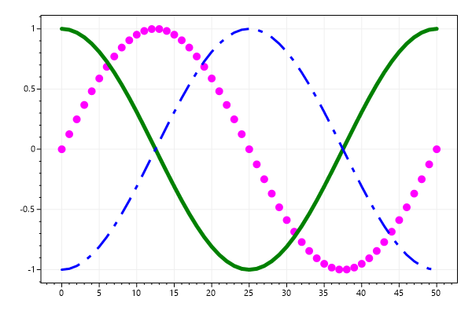</div>
<h2><a href='#scatter_markers' name='scatter_markers' style='color: black;'>Custom markers</a></h2>
Markers can be customized using optional arguments and public fields.
<pre class='prettyprint cs'>var plt = new ScottPlot.Plot(600, 400);

int pointCount = 51;
double[] x = DataGen.Consecutive(pointCount);
double[] sin = DataGen.Sin(pointCount);
double[] cos = DataGen.Cos(pointCount);

// add scatter plots and customize markers
var sp1 = plt.AddScatter(x, sin, markerSize: 15);
sp1.MarkerShape = MarkerShape.openCircle;

var sp2 = plt.AddScatter(x, cos, markerSize: 7);
sp2.MarkerShape = MarkerShape.filledSquare;

plt.SaveFig("scatter_markers.png");</pre>
<div class='center'>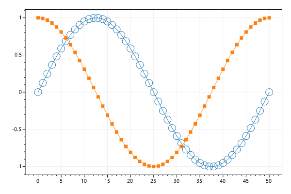</div>
<h2><a href='#scatter_markershape' name='scatter_markershape' style='color: black;'>All marker shapes</a></h2>
Legend indicates names of all available marker shapes
<pre class='prettyprint cs'>var plt = new ScottPlot.Plot(600, 400);

int pointCount = 51;
double[] x = DataGen.Consecutive(pointCount);

string[] markerShapeNames = Enum.GetNames(typeof(MarkerShape));
for (int i = 0; i < markerShapeNames.Length; i++)
{
    Enum.TryParse(markerShapeNames[i], out MarkerShape ms);
    double[] sin = DataGen.Sin(pointCount, 2, -i);
    plt.AddScatter(x, sin, markerSize: 7, markerShape: ms, label: markerShapeNames[i]);
}

plt.Grid(enable: false);
var legend = plt.Legend();
legend.FontSize = 10;

plt.SaveFig("scatter_markerShape.png");</pre>
<div class='center'>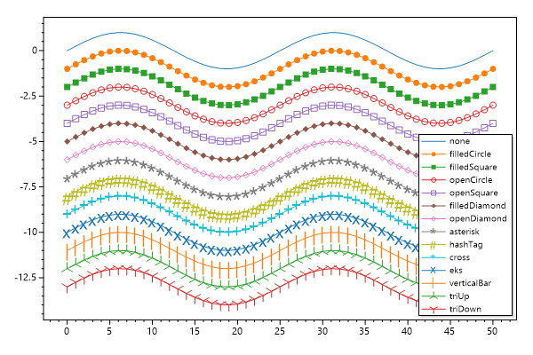</div>
<h2><a href='#scatter_quickstart' name='scatter_quickstart' style='color: black;'>Scatter Plot Quickstart</a></h2>
Scatter plots are best for small numbers of paired X/Y data points. For evenly-spaced data points Signal is much faster.
<pre class='prettyprint cs'>var plt = new ScottPlot.Plot(600, 400);

// create sample X/Y data
int pointCount = 51;
double[] x = DataGen.Consecutive(pointCount);
double[] sin = DataGen.Sin(pointCount);
double[] cos = DataGen.Cos(pointCount);

// add scatter plots
plt.AddScatter(x, sin);
plt.AddScatter(x, cos);

plt.SaveFig("scatter_quickstart.png");</pre>
<div class='center'>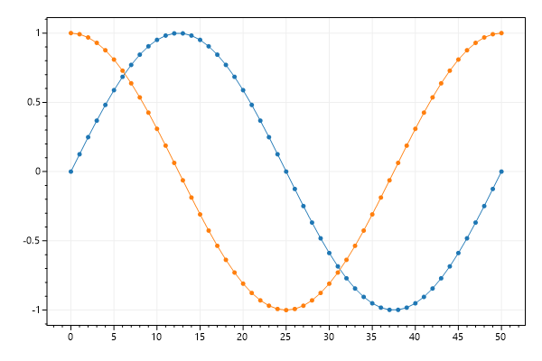</div>
<h2><a href='#scatter_random' name='scatter_random' style='color: black;'>Random X/Y Points</a></h2>
X data for scatter plots does not have to be evenly spaced, making scatter plots are ideal for displaying random data like this.
<pre class='prettyprint cs'>var plt = new ScottPlot.Plot(600, 400);

Random rand = new Random(0);
int pointCount = 51;
double[] xs1 = DataGen.RandomNormal(rand, pointCount, 1);
double[] xs2 = DataGen.RandomNormal(rand, pointCount, 3);
double[] ys1 = DataGen.RandomNormal(rand, pointCount, 5);
double[] ys2 = DataGen.RandomNormal(rand, pointCount, 7);

plt.AddScatter(xs1, ys1, markerSize: 0, label: "lines only");
plt.AddScatter(xs2, ys2, lineWidth: 0, label: "markers only");
plt.Legend();

plt.SaveFig("scatter_random.png");</pre>
<div class='center'>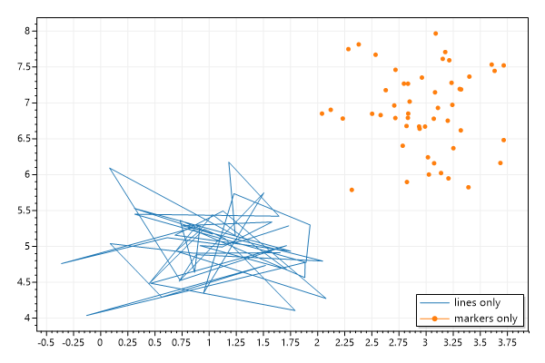</div>
<h2><a href='#signal_5millionpoints' name='signal_5millionpoints' style='color: black;'>5 Million Points</a></h2>
Signal plots with millions of points can be interacted with in real time.
<pre class='prettyprint cs'>var plt = new ScottPlot.Plot(600, 400);

Random rand = new Random(0);
for (int i = 0; i < 5; i++)
{
    // add a new signal plot with one million points
    double[] values = DataGen.RandomWalk(rand, 1_000_000);
    plt.AddSignal(values);
}
plt.Benchmark(enable: true);

plt.SaveFig("signal_5millionPoints.png");</pre>
<div class='center'>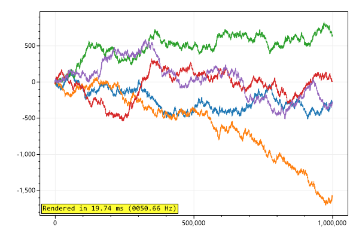</div>
<h2><a href='#signal_advantage' name='signal_advantage' style='color: black;'>Speed Test</a></h2>
Compare the speed to the same data plotted as a scatter plot.
<pre class='prettyprint cs'>var plt = new ScottPlot.Plot(600, 400);

double[] xs = DataGen.Consecutive(100_000, 1.0 / 20_000);
double[] values = DataGen.RandomWalk(null, 100_000);

plt.AddScatter(xs, values, Color.Red, markerSize: 0);

plt.Benchmark(enable: true);
plt.Title($"Scatter Plot: One Million Points");

plt.SaveFig("signal_advantage.png");</pre>
<div class='center'>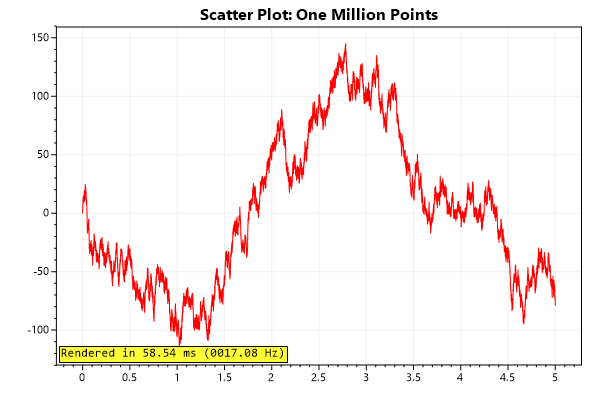</div>
<h2><a href='#signal_density' name='signal_density' style='color: black;'>Display data density</a></h2>
When plotting extremely high density data, you can't always see the trends underneath all those overlapping data points. If you send an array of colors to PlotSignal(), it will use those colors to display density.
<pre class='prettyprint cs'>var plt = new ScottPlot.Plot(600, 400);

// create an extremely noisy signal with a subtle sine wave beneath it
Random rand = new Random(0);
int pointCount = 100_000;
double[] signal1 = DataGen.Sin(pointCount, 3);
double[] noise = DataGen.RandomNormal(rand, pointCount, 0, 5);
double[] data = new double[pointCount];
for (int i = 0; i < data.Length; i++)
    data[i] = signal1[i] + noise[i];

// plot the noisy signal using the traditional method
var sp1 = plt.AddSignal(data);
sp1.OffsetY = -40;
sp1.Color = Color.Red;

// use a custom colors to display data of different densities
string[] colorCodes = { "#440154", "#39568C", "#1F968B", "#73D055" };
Color[] colors = colorCodes.Select(x => ColorTranslator.FromHtml(x)).ToArray();

var sp2 = plt.AddSignal(data);
sp2.DensityColors = colors;

plt.Title("Color by Density vs. Solid Color");
plt.AxisAuto(0, .1);

plt.SaveFig("signal_density.png");</pre>
<div class='center'>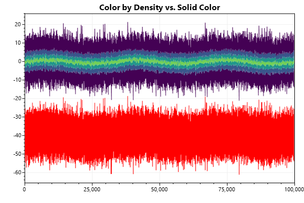</div>
<h2><a href='#signal_fillabove' name='signal_fillabove' style='color: black;'>Gradient Fill Above</a></h2>
Signal plots can be filled above using a color gradient.
<pre class='prettyprint cs'>var plt = new ScottPlot.Plot(600, 400);

double[] data = DataGen.RandomWalk(1000);

var sig = plt.AddSignal(data);
sig.FillType = FillType.FillAbove;
sig.FillColor1 = Color.Blue;
sig.GradientFillColor1 = Color.Transparent;

plt.AxisAutoX(0);

plt.SaveFig("signal_fillAbove.png");</pre>
<div class='center'>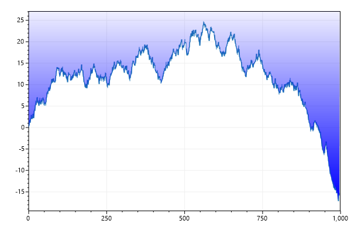</div>
<h2><a href='#signal_fillaboveandbelow' name='signal_fillaboveandbelow' style='color: black;'>Fill Above and Below</a></h2>
Signal plots can be filled above and below
<pre class='prettyprint cs'>var plt = new ScottPlot.Plot(600, 400);

double[] data = DataGen.RandomWalk(1000);

var sig = plt.AddSignal(data);
sig.FillType = FillType.FillAboveAndBelow;
sig.FillColor1 = Color.Green;
sig.GradientFillColor1 = Color.Green;
sig.FillColor2 = Color.Red;
sig.GradientFillColor2 = Color.Red;
sig.BaselineY = 5;

plt.AxisAutoX(0);

plt.SaveFig("signal_fillAboveAndBelow.png");</pre>
<div class='center'>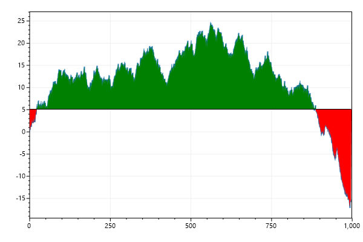</div>
<h2><a href='#signal_fillbelow' name='signal_fillbelow' style='color: black;'>Fill Below</a></h2>
Signal plots can be filled below with a solid color.
<pre class='prettyprint cs'>var plt = new ScottPlot.Plot(600, 400);

double[] data = DataGen.RandomWalk(1000);

var sig = plt.AddSignal(data);
sig.FillType = FillType.FillBelow;
sig.FillColor1 = Color.Blue;

plt.AxisAutoX(0);

plt.SaveFig("signal_fillBelow.png");</pre>
<div class='center'>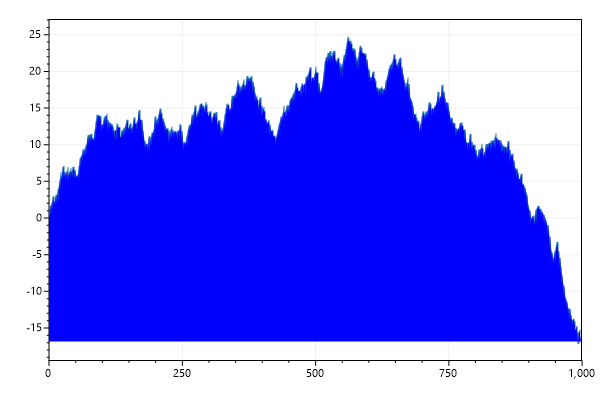</div>
<h2><a href='#signal_fillbelowgradient' name='signal_fillbelowgradient' style='color: black;'>Gradient Fill Below</a></h2>
Signal plots can be filled below using a color gradient.
<pre class='prettyprint cs'>var plt = new ScottPlot.Plot(600, 400);

double[] data = DataGen.RandomWalk(1000);

var sig = plt.AddSignal(data);
sig.FillType = FillType.FillBelow;
sig.FillColor1 = Color.Blue;
sig.GradientFillColor1 = Color.Transparent;

plt.AxisAutoX(0);

plt.SaveFig("signal_fillBelowGradient.png");</pre>
<div class='center'>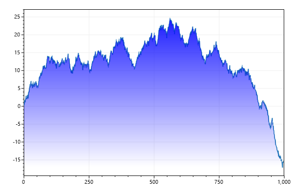</div>
<h2><a href='#signal_firstnpoints' name='signal_firstnpoints' style='color: black;'>Display first N points</a></h2>
When plotting live data it is useful to allocate a large array in memory then fill it with values as they come in. By setting the maxRenderIndex property of a scatter plot to can prevent rendering the end of the array (which is probably filled with zeros).
<pre class='prettyprint cs'>var plt = new ScottPlot.Plot(600, 400);

// create an array larger than we intend to display
double[] values = DataGen.RandomWalk(1000);

// only render the first N points of the signal
var sig = plt.AddSignal(values);
sig.MaxRenderIndex = 500;

plt.SaveFig("signal_firstNpoints.png");</pre>
<div class='center'>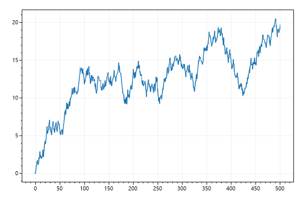</div>
<h2><a href='#signal_gradientaboveandbelowgradient' name='signal_gradientaboveandbelowgradient' style='color: black;'>Gradient Fill Above and Below</a></h2>
Gradients can be used to fill above and below.
<pre class='prettyprint cs'>var plt = new ScottPlot.Plot(600, 400);

double[] data = DataGen.RandomWalk(1000);

plt.Style(Style.Gray1);
plt.Colorset(Drawing.Palette.OneHalfDark);

var sig = plt.AddSignal(data);
sig.MarkerSize = 0;
sig.Color = Color.Black;
sig.FillType = FillType.FillAboveAndBelow;
sig.FillColor1 = Color.FromArgb(255, 44, 160, 44); // Green
sig.GradientFillColor1 = Color.Transparent;
sig.FillColor2 = Color.FromArgb(255, 214, 39, 40); // Red
sig.GradientFillColor2 = Color.Transparent;
sig.BaselineY = 5;

plt.AxisAutoX(0);

plt.SaveFig("signal_gradientAboveAndBelowGradient.png");</pre>
<div class='center'>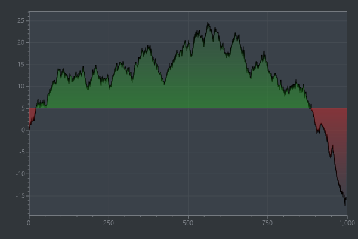</div>
<h2><a href='#signal_quickstart' name='signal_quickstart' style='color: black;'>Signal Plot Quickstart</a></h2>
Signal plots are ideal for evenly-spaced data with thousands or millions of points.
<pre class='prettyprint cs'>var plt = new ScottPlot.Plot(600, 400);

double[] values = DataGen.RandomWalk(null, 100_000);
int sampleRate = 20_000;

// Signal plots require a data array and a sample rate (points per unit)
plt.AddSignal(values, sampleRate);

plt.Benchmark(enable: true);
plt.Title($"Signal Plot: One Million Points");

plt.SaveFig("signal_quickstart.png");</pre>
<div class='center'></div>
<h2><a href='#signal_range' name='signal_range' style='color: black;'>Plot a Range of Points</a></h2>
It is sometimes useful to only display values within a range of the source data array.
<pre class='prettyprint cs'>var plt = new ScottPlot.Plot(600, 400);

// create an array larger than we intend to display
double[] values = DataGen.RandomWalk(1000);

// only render values between the two defined indexes
var sig = plt.AddSignal(values);
sig.MinRenderIndex = 400;
sig.MaxRenderIndex = 500;

plt.SaveFig("signal_range.png");</pre>
<div class='center'></div>
<h2><a href='#signal_styled' name='signal_styled' style='color: black;'>Styled Signal Plot</a></h2>
Signal plots can be styled using public fields. Signal plots can also be offset by a defined X or Y amount.
<pre class='prettyprint cs'>var plt = new ScottPlot.Plot(600, 400);

double[] ys = DataGen.RandomWalk(null, 500);
int sampleRate = 10;

var sp2 = plt.AddSignal(ys, sampleRate, Color.Magenta);
sp2.OffsetY = 1000;
sp2.OffsetX = 300;
sp2.LineStyle = LineStyle.Dash;
sp2.LineWidth = 2;

plt.SaveFig("signal_styled.png");</pre>
<div class='center'></div>
<h2><a href='#signalconst_quickstart' name='signalconst_quickstart' style='color: black;'>SignalConst Quickstart</a></h2>
SignalConst plots pre-processes data to render much faster than Signal plots. Pre-processing takes a little time up-front and requires 4x the memory of Signal.
<pre class='prettyprint cs'>var plt = new ScottPlot.Plot(600, 400);

double[] values = DataGen.RandomWalk(1_000_000);
plt.AddSignal(values);
plt.Title("One Million Points");
plt.Benchmark();

plt.SaveFig("signalconst_quickstart.png");</pre>
<div class='center'></div>
<h2><a href='#signalxy_density' name='signalxy_density' style='color: black;'>Different Densities</a></h2>
Signal with mised low and high density data
<pre class='prettyprint cs'>var plt = new ScottPlot.Plot(600, 400);

Random rand = new Random(0);
int pointCount = 1_000_000;
double[] sine = DataGen.Sin(pointCount, 3);
double[] noise = DataGen.RandomNormal(rand, pointCount, 0, 0.5);
double[] ys = sine.Zip(noise, (s, n) => s + n).ToArray();
double[] xs = new double[pointCount];

double currentX = 0;
for (int i = 0; i < pointCount; i++)
{
    if ((i % 100000) < 10)
        currentX += 10;
    else
        currentX += 0.0001;
    xs[i] = currentX;
}

plt.AddSignalXY(xs, ys);

plt.SaveFig("signalxy_density.png");</pre>
<div class='center'></div>
<h2><a href='#signalxy_gaps' name='signalxy_gaps' style='color: black;'>Signal Data with Gaps</a></h2>
Signal with defined Xs that contain gaps
<pre class='prettyprint cs'>var plt = new ScottPlot.Plot(600, 400);

Random rand = new Random(0);
int pointCount = 1_000_000;
double[] sine = DataGen.Sin(pointCount, 3);
double[] noise = DataGen.RandomNormal(rand, pointCount, 0, 0.5);
double[] ys = sine.Zip(noise, (s, n) => s + n).ToArray();
double[] xs = Enumerable.Range(0, pointCount)
    .Select(x => (double)x)
    .Select(x => x > 500_000 ? x + 1_000_000 : x)
    .Select(x => x > 200_000 ? x + 100_000 : x)
    .ToArray();

plt.AddSignalXY(xs, ys);

plt.SaveFig("signalxy_gaps.png");</pre>
<div class='center'></div>
<h2><a href='#signalxy_quickstart' name='signalxy_quickstart' style='color: black;'>SignalXY Quickstart</a></h2>
SignalXY is a speed-optimized plot for displaying vaues (Ys) with unevenly-spaced positions (Xs) that are in ascending order. If your data is evenly-spaced, Signal and SignalConst is faster.
<pre class='prettyprint cs'>var plt = new ScottPlot.Plot(600, 400);

// generate random, unevenly-spaced data
Random rand = new Random(0);
int pointCount = 100_000;
double[] ys = new double[pointCount];
double[] xs = new double[pointCount];
for (int i = 1; i < ys.Length; i++)
{
    ys[i] = ys[i - 1] + rand.NextDouble() - .5;
    xs[i] = xs[i - 1] + rand.NextDouble();
}

plt.AddSignalXY(xs, ys);

plt.SaveFig("signalxy_quickstart.png");</pre>
<div class='center'></div>
<h2><a href='#signalxyconst_quickstart' name='signalxyconst_quickstart' style='color: black;'>SignalConst with X and Y data</a></h2>
SignalXYConst is a speed-optimized plot for displaying vaues (Ys) with unevenly-spaced positions (Xs) that are in ascending order. If your data is evenly-spaced, Signal and SignalConst is faster.
<pre class='prettyprint cs'>var plt = new ScottPlot.Plot(600, 400);

// generate random, unevenly-spaced data
Random rand = new Random(0);
int pointCount = 100_000;
double[] ys = new double[pointCount];
double[] xs = new double[pointCount];
for (int i = 1; i < ys.Length; i++)
{
    ys[i] = ys[i - 1] + rand.NextDouble() - .5;
    xs[i] = xs[i - 1] + rand.NextDouble();
}

plt.AddSignalXYConst(xs, ys);

plt.SaveFig("signalxyconst_quickstart.png");</pre>
<div class='center'></div>
<h2><a href='#signalxyconst_types' name='signalxyconst_types' style='color: black;'>Different data types for xs and ys</a></h2>
SignalXYConst with (int)Xs and (float)Ys arrays
<pre class='prettyprint cs'>var plt = new ScottPlot.Plot(600, 400);

Random rand = new Random(0);
int pointCount = 1_000_000;
double[] sine = DataGen.Sin(pointCount, 3);
double[] noise = DataGen.RandomNormal(rand, pointCount, 0, 0.5);
float[] ys = sine.Zip(noise, (s, n) => s + n).Select(x => (float)x).ToArray();
int[] xs = Enumerable.Range(0, pointCount)
    .Select(x => (int)x)
    .Select(x => x > 500_000 ? x + 1_000_000 : x)
    .Select(x => x > 200_000 ? x + 100_000 : x)
    .ToArray();

plt.AddSignalXYConst(xs, ys);

plt.SaveFig("signalxyconst_types.png");</pre>
<div class='center'></div>
<h2><a href='#stats_cph' name='stats_cph' style='color: black;'>CPH</a></h2>
This example demonstrates how to plot a cumulative probability histogram (CPH) to compare the distribution of two datasets.
<pre class='prettyprint cs'>var plt = new ScottPlot.Plot(600, 400);

// create sample data for two datasets
Random rand = new Random(0);
double[] values1 = DataGen.RandomNormal(rand, pointCount: 1000, mean: 50, stdDev: 20);
double[] values2 = DataGen.RandomNormal(rand, pointCount: 1000, mean: 45, stdDev: 25);
var hist1 = new ScottPlot.Statistics.Histogram(values1, min: 0, max: 100);
var hist2 = new ScottPlot.Statistics.Histogram(values2, min: 0, max: 100);

// display datasets as step plots
var sp1 = plt.AddScatter(hist1.bins, hist1.cumulativeFrac);
sp1.Label = "Sample A";
sp1.StepDisplay = true;
sp1.MarkerSize = 0;

var sp2 = plt.AddScatter(hist2.bins, hist2.cumulativeFrac);
sp2.Label = "Sample B";
sp2.StepDisplay = true;
sp2.MarkerSize = 0;

// decorate the plot
plt.Legend();
plt.SetAxisLimits(yMin: 0, yMax: 1);
plt.Grid(lineStyle: LineStyle.Dot);
plt.Title("Cumulative Probability Histogram");
plt.XAxis.Label("Probability (fraction)");
plt.YAxis.Label("Value (units)");

plt.SaveFig("stats_cph.png");</pre>
<div class='center'></div>
<h2><a href='#stats_histogram' name='stats_histogram' style='color: black;'>Histogram</a></h2>
The Histogram class makes it easy to get binned population information.
<pre class='prettyprint cs'>var plt = new ScottPlot.Plot(600, 400);

Random rand = new Random(0);
double[] values = DataGen.RandomNormal(rand, pointCount: 1000, mean: 50, stdDev: 20);
var hist = new ScottPlot.Statistics.Histogram(values, min: 0, max: 100);

// plot the bins as a bar graph (on the primary Y axis)
var bar = plt.AddBar(hist.counts, hist.bins);
bar.BarWidth = hist.binSize * 1.2; // oversize to reduce render artifacts
bar.BorderLineWidth = 0;
bar.YAxisIndex = 0;
plt.YAxis.Label("Count (#)");
plt.YAxis.Color(bar.FillColor);

// plot the mean curve as a scatter plot (on the secondary Y axis)
var sp = plt.AddScatter(hist.bins, hist.countsFracCurve);
sp.MarkerSize = 0;
sp.LineWidth = 2;
sp.YAxisIndex = 1;
plt.YAxis2.Label("Fraction");
plt.YAxis2.Color(sp.Color);
plt.YAxis2.Ticks(true);

// decorate the plot
plt.XAxis2.Label("Normal Random Data", bold: true);
plt.XAxis.Label("Value (units)");
plt.SetAxisLimits(yMin: 0);
plt.Grid(lineStyle: LineStyle.Dot);

plt.SaveFig("stats_histogram.png");</pre>
<div class='center'></div>
<h2><a href='#stats_linearregression' name='stats_linearregression' style='color: black;'>Linear Regression</a></h2>
A regression module is available to simplify the act of creating a linear regression line fitted to the data.
<pre class='prettyprint cs'>var plt = new ScottPlot.Plot(600, 400);

// Create some linear but noisy data
double[] ys = DataGen.NoisyLinear(null, pointCount: 100, noise: 30);
double[] xs = DataGen.Consecutive(ys.Length);
double x1 = xs[0];
double x2 = xs[xs.Length - 1];

// use the linear regression fitter to fit these data
var model = new ScottPlot.Statistics.LinearRegressionLine(xs, ys);

// plot the original data and add the regression line
plt.Title("Linear Regression\n" +
    $"Y = {model.slope:0.0000}x + {model.offset:0.0} " +
    $"(R² = {model.rSquared:0.0000})");
plt.AddScatter(xs, ys, lineWidth: 0);
plt.AddLine(model.slope, model.offset, (x1, x2), lineWidth: 2);

plt.SaveFig("stats_linearRegression.png");</pre>
<div class='center'></div>
<h2><a href='#stats_orderstatistics' name='stats_orderstatistics' style='color: black;'>Nth Order Statistics</a></h2>
The Nth order statistic of a set is the Nth smallest value of the set (indexed from 1).
<pre class='prettyprint cs'>var plt = new ScottPlot.Plot(600, 400);

Random rand = new Random(0);
int pointCount = 500;
double[] xs = DataGen.Consecutive(pointCount);
double[] ys = DataGen.Random(rand, pointCount);

int n = 200;
double nthValue = Statistics.Common.NthOrderStatistic(ys, n);

plt.Title($"{n}th Smallest Value (of {pointCount})");
plt.AddScatter(xs, ys, lineWidth: 0, markerShape: MarkerShape.openCircle);
plt.AddHorizontalLine(nthValue, width: 3, style: LineStyle.Dash);

plt.SaveFig("stats_orderStatistics.png");</pre>
<div class='center'></div>
<h2><a href='#stats_percentiles' name='stats_percentiles' style='color: black;'>Percentiles</a></h2>
Percentiles are a good tool to analyze the distribution of your data and filter out extreme values.
<pre class='prettyprint cs'>var plt = new ScottPlot.Plot(600, 400);

Random rand = new Random(0);
int pointCount = 500;
double[] xs = DataGen.Consecutive(pointCount);
double[] ys = DataGen.Random(rand, pointCount);

double tenthPercentile = Statistics.Common.Percentile(ys, 10);

plt.Title("10th Percentile");
plt.AddScatter(xs, ys, lineWidth: 0, markerShape: MarkerShape.openCircle);
plt.AddHorizontalLine(tenthPercentile, width: 3, style: LineStyle.Dash);

plt.SaveFig("stats_percentiles.png");</pre>
<div class='center'></div>
<h2><a href='#stats_quantiles' name='stats_quantiles' style='color: black;'>Quantiles</a></h2>
A q-Quantile is a generalization of quartiles and percentiles to any number of buckets.
<pre class='prettyprint cs'>var plt = new ScottPlot.Plot(600, 400);

Random rand = new Random(0);
int pointCount = 500;
double[] xs = DataGen.Consecutive(pointCount);
double[] ys = DataGen.Random(rand, pointCount);

// A septile is a 7-quantile
double secondSeptile = Statistics.Common.Quantile(ys, 2, 7);

plt.Title("Second Septile");
plt.AddScatter(xs, ys, lineWidth: 0, markerShape: MarkerShape.openCircle);
plt.AddHorizontalLine(secondSeptile, width: 3, style: LineStyle.Dash);

plt.SaveFig("stats_quantiles.png");</pre>
<div class='center'></div>
<h2><a href='#style_black' name='style_black' style='color: black;'>Black</a></h2>
Customize many plot features using style presets
<pre class='prettyprint cs'>var plt = new ScottPlot.Plot(600, 400);

// plot sample data
plt.AddSignal(DataGen.Sin(51));
plt.AddSignal(DataGen.Cos(51));

// customize the plot style
plt.Style(Style.Black);

plt.SaveFig("style_Black.png");</pre>
<div class='center'></div>
<h2><a href='#style_blue1' name='style_blue1' style='color: black;'>Blue1</a></h2>
Customize many plot features using style presets
<pre class='prettyprint cs'>var plt = new ScottPlot.Plot(600, 400);

// plot sample data
plt.AddSignal(DataGen.Sin(51));
plt.AddSignal(DataGen.Cos(51));

// customize the plot style
plt.Style(Style.Blue1);

plt.SaveFig("style_blue1.png");</pre>
<div class='center'></div>
<h2><a href='#style_blue2' name='style_blue2' style='color: black;'>Blue2</a></h2>
Customize many plot features using style presets
<pre class='prettyprint cs'>var plt = new ScottPlot.Plot(600, 400);

// plot sample data
plt.AddSignal(DataGen.Sin(51));
plt.AddSignal(DataGen.Cos(51));

// customize the plot style
plt.Style(Style.Blue2);

plt.SaveFig("style_blue2.png");</pre>
<div class='center'></div>
<h2><a href='#style_blue3' name='style_blue3' style='color: black;'>Blue3</a></h2>
Customize many plot features using style presets
<pre class='prettyprint cs'>var plt = new ScottPlot.Plot(600, 400);

// plot sample data
plt.AddSignal(DataGen.Sin(51));
plt.AddSignal(DataGen.Cos(51));

// customize the plot style
plt.Style(Style.Blue3);

plt.SaveFig("style_blue3.png");</pre>
<div class='center'></div>
<h2><a href='#style_control' name='style_control' style='color: black;'>Control</a></h2>
Customize many plot features using style presets
<pre class='prettyprint cs'>var plt = new ScottPlot.Plot(600, 400);

// plot sample data
plt.AddSignal(DataGen.Sin(51));
plt.AddSignal(DataGen.Cos(51));

// customize the plot style
plt.Style(Style.Control);

plt.SaveFig("style_Control.png");</pre>
<div class='center'></div>
<h2><a href='#style_default' name='style_default' style='color: black;'>Default</a></h2>
Customize many plot features using style presets
<pre class='prettyprint cs'>var plt = new ScottPlot.Plot(600, 400);

// plot sample data
plt.AddSignal(DataGen.Sin(51));
plt.AddSignal(DataGen.Cos(51));

// customize the plot style
plt.Style(Style.Default);

plt.SaveFig("style_Default.png");</pre>
<div class='center'></div>
<h2><a href='#style_gray1' name='style_gray1' style='color: black;'>Gray1</a></h2>
Customize many plot features using style presets
<pre class='prettyprint cs'>var plt = new ScottPlot.Plot(600, 400);

// plot sample data
plt.AddSignal(DataGen.Sin(51));
plt.AddSignal(DataGen.Cos(51));

// customize the plot style
plt.Style(Style.Gray1);

plt.SaveFig("style_Gray1.png");</pre>
<div class='center'></div>
<h2><a href='#style_gray2' name='style_gray2' style='color: black;'>Gray2</a></h2>
Customize many plot features using style presets
<pre class='prettyprint cs'>var plt = new ScottPlot.Plot(600, 400);

// plot sample data
plt.AddSignal(DataGen.Sin(51));
plt.AddSignal(DataGen.Cos(51));

// customize the plot style
plt.Style(Style.Gray2);

plt.SaveFig("style_Gray2.png");</pre>
<div class='center'></div>
<h2><a href='#style_light1' name='style_light1' style='color: black;'>Light1</a></h2>
Customize many plot features using style presets
<pre class='prettyprint cs'>var plt = new ScottPlot.Plot(600, 400);

// plot sample data
plt.AddSignal(DataGen.Sin(51));
plt.AddSignal(DataGen.Cos(51));

// customize the plot style
plt.Style(Style.Light1);

plt.SaveFig("style_light1.png");</pre>
<div class='center'></div>
<h2><a href='#style_light2' name='style_light2' style='color: black;'>Light2</a></h2>
Customize many plot features using style presets
<pre class='prettyprint cs'>var plt = new ScottPlot.Plot(600, 400);

// plot sample data
plt.AddSignal(DataGen.Sin(51));
plt.AddSignal(DataGen.Cos(51));

// customize the plot style
plt.Style(Style.Light2);

plt.SaveFig("style_light2.png");</pre>
<div class='center'></div>
<h2><a href='#style_seaborn' name='style_seaborn' style='color: black;'>Seaborn</a></h2>
Customize many plot features using style presets
<pre class='prettyprint cs'>var plt = new ScottPlot.Plot(600, 400);

// plot sample data
plt.AddSignal(DataGen.Sin(51));
plt.AddSignal(DataGen.Cos(51));

// customize the plot style
plt.Style(Style.Seaborn);

plt.SaveFig("style_Seaborn.png");</pre>
<div class='center'></div>
<h2><a href='#text_alignment' name='text_alignment' style='color: black;'>Text Alignment and Rotation</a></h2>
Advanced options are available to customize rotation and alignment. Note that if rotation is used, alignment is ignored.
<pre class='prettyprint cs'>var plt = new ScottPlot.Plot(600, 400);

int pointCount = 51;
double[] x = DataGen.Consecutive(pointCount);
double[] sin = DataGen.Sin(pointCount);
double[] cos = DataGen.Cos(pointCount);

plt.AddScatter(x, sin);
plt.AddScatter(x, cos);

plt.AddPoint(25, 0.8, color: Color.Green);
var t1 = plt.AddText(" Important Point (1)", 25, 0.8, 16, Color.Green);

plt.AddPoint(30, 0.3, color: Color.Black, size: 15);
var t2 = plt.AddText(" Default alignment (2)", 30, 0.3, 16);

plt.AddPoint(30, 0, color: Color.Black, size: 15);
var t3 = plt.AddText("Middle center (3)", 30, 0, 16);
t3.Alignment = Alignment.MiddleCenter;

plt.AddPoint(30, -0.3, color: Color.Black, size: 15);
var t4 = plt.AddText("Upper left (4)", 30, -0.3, 16);
t4.Alignment = Alignment.UpperLeft;

plt.AddPoint(5, -.5, color: Color.Blue, size: 15);
var t5 = plt.AddText(" Rotated Text (5)", 5, -.5, 16);
t5.Rotation = -30;

var t6 = plt.AddText(" Filled Background (6)", 15, -.6, 16);
t6.Color = Color.Red;
t6.FontBold = true;
t6.BackgroundFill = true;
t6.BackgroundColor = Color.LightBlue;

plt.SaveFig("text_alignment.png");</pre>
<div class='center'></div>
<h2><a href='#text_fonts' name='text_fonts' style='color: black;'>Custom Fonts</a></h2>
You can pass in a Font to further customize font options
<pre class='prettyprint cs'>var plt = new ScottPlot.Plot(600, 400);

// display some interesting data in the background
plt.AddSignal(DataGen.Sin(51), label: "sin");
plt.AddSignal(DataGen.Cos(51), label: "cos");

// add text with custom fonts
plt.AddText("very graph", 25, .8, new Drawing.Font() { Name = "comic sans ms", Size = 24, Color = Color.Blue, Bold = true });
plt.AddText("so data", 0, 0, new Drawing.Font() { Name = "comic sans ms", Size = 42, Color = Color.Magenta, Bold = true });
plt.AddText("many documentation", 3, -.6, new Drawing.Font() { Name = "comic sans ms", Size = 18, Color = Color.DarkBlue, Bold = true });
plt.AddText("wow.", 10, .6, new Drawing.Font() { Name = "comic sans ms", Size = 36, Color = Color.Green, Bold = true });
plt.AddText("NuGet", 32, 0, new Drawing.Font() { Name = "comic sans ms", Size = 24, Color = Color.Gold, Bold = true });

// configure axis labels
plt.YAxis.Label(label: "vertical units", fontName: "impact", size: 24, color: Color.Red, bold: true);
plt.XAxis.Label(label: "horizontal units", fontName: "georgia", size: 24, color: Color.Blue, bold: true);
plt.XAxis2.Label(label: "Impressive Graph", size: 24, color: Color.Purple, bold: true);

// configure tick labels
plt.XAxis.TickLabelStyle(color: Color.DarkBlue, fontName: "comic sans ms", fontSize: 16);
plt.YAxis.TickLabelStyle(color: Color.DarkGreen, fontName: "comic sans ms", fontSize: 16);

// add a legend to the corner
var legend = plt.Legend();
legend.FontName = "comic sans ms";
legend.FontSize = 18;
legend.FontBold = true;
legend.FontColor = Color.DarkBlue;

plt.SaveFig("text_fonts.png");</pre>
<div class='center'></div>
<h2><a href='#text_quickstart' name='text_quickstart' style='color: black;'>Text</a></h2>
The Text plottable displays a string at an X/Y coordinate in unit space. Unlike the Annotation plottable, text moves when the axes are adjusted.
<pre class='prettyprint cs'>var plt = new ScottPlot.Plot(600, 400);

int pointCount = 51;
double[] x = DataGen.Consecutive(pointCount);
double[] sin = DataGen.Sin(pointCount);
double[] cos = DataGen.Cos(pointCount);

plt.AddScatter(x, sin);
plt.AddScatter(x, cos);

plt.AddText("sample text", 10, .5, size: 16, color: Color.Blue);

plt.SaveFig("text_quickstart.png");</pre>
<div class='center'></div>
<h2><a href='#ticks_culture' name='ticks_culture' style='color: black;'>Tick Label Culture</a></h2>
Large numbers and dates are formatted differently for different cultures. Hungarian uses spaces to separate large numbers and periods to separate fields in dates.
<pre class='prettyprint cs'>var plt = new ScottPlot.Plot(600, 400);

// generate some data
double[] price = DataGen.RandomWalk(null, 60 * 8, 10000);
DateTime start = new DateTime(2019, 08, 25, 8, 30, 00);
double pointsPerDay = 24 * 60;

// create the plot
var sig = plt.AddSignal(price, pointsPerDay);
sig.OffsetX = start.ToOADate();

// set the localization
var culture = System.Globalization.CultureInfo.CreateSpecificCulture("hu"); // Hungarian
plt.SetCulture(culture);

// further decorate the plot
plt.XAxis.DateTimeFormat(true);
plt.YAxis.Label("Price");
plt.XAxis.Label("Date and Time");
plt.XAxis2.Label("Hungarian Formatted DateTime Tick Labels");

plt.SaveFig("ticks_culture.png");</pre>
<div class='center'></div>
<h2><a href='#ticks_culturecustom' name='ticks_culturecustom' style='color: black;'>Custom Tick Label Culture</a></h2>
SetCulture() as arguments to let the user manually define formatting strings which will be used globally to change how numbers and dates are formatted.
<pre class='prettyprint cs'>var plt = new ScottPlot.Plot(600, 400);

// generate 10 days of data
int pointCount = 10;
double[] values = DataGen.RandomWalk(null, pointCount);
double[] days = new double[pointCount];
DateTime day1 = new DateTime(1985, 09, 24);
for (int i = 0; i < days.Length; i++)
    days[i] = day1.AddDays(1).AddDays(i).ToOADate();

// plot the data with custom tick format (https://tinyurl.com/ycwh45af)
plt.AddScatter(days, values);
plt.XAxis.TickLabelFormat("M\\/dd", dateTimeFormat: true);

plt.SaveFig("ticks_cultureCustom.png");</pre>
<div class='center'></div>
<h2><a href='#ticks_datetime' name='ticks_datetime' style='color: black;'>Plotting DateTime Data</a></h2>
This example shows how to display DateTime data on the horizontal axis. Use DateTime.ToOADate() to convert DateTime[] to double[], plot the data,  then tell the axis to format tick labels as dates.
<pre class='prettyprint cs'>var plt = new ScottPlot.Plot(600, 400);

// create data sample data
DateTime[] myDates = new DateTime[100];
for (int i = 0; i < myDates.Length; i++)
    myDates[i] = new DateTime(1985, 9, 24).AddDays(7 * i);

// Convert DateTime[] to double[] before plotting
double[] xs = myDates.Select(x => x.ToOADate()).ToArray();
double[] ys = DataGen.RandomWalk(myDates.Length);
plt.AddScatter(xs, ys);

// Then tell the axis to display tick labels using a time format
plt.XAxis.DateTimeFormat(true);

plt.SaveFig("ticks_dateTime.png");</pre>
<div class='center'></div>
<h2><a href='#ticks_defined' name='ticks_defined' style='color: black;'>Manual Tick Labels</a></h2>
Tick positions and labels can be defined manually.
<pre class='prettyprint cs'>var plt = new ScottPlot.Plot(600, 400);

// plot sample data
plt.AddSignal(DataGen.Sin(51));
plt.AddSignal(DataGen.Cos(51));

// manually define X axis tick positions and labels
double[] xPositions = { 7, 21, 37, 46 };
string[] xLabels = { "VII", "XXI", "XXXVII", "XLVI" };
plt.XAxis.ManualTickPositions(xPositions, xLabels);

// manually define Y axis tick positions and labels
double[] yPositions = { -1, 0, .5, 1 };
string[] yLabels = { "bottom", "center", "half", "top" };
plt.YAxis.ManualTickPositions(yPositions, yLabels);

plt.SaveFig("ticks_defined.png");</pre>
<div class='center'></div>
<h2><a href='#ticks_defineddatetimespace' name='ticks_defineddatetimespace' style='color: black;'>Defined DateTime Spacing</a></h2>
This example shows how to use a fixed inter-tick distance for a DateTime axis
<pre class='prettyprint cs'>var plt = new ScottPlot.Plot(600, 400);

// create a series of dates
int pointCount = 20;
double[] dates = new double[pointCount];
var firstDay = new DateTime(2020, 1, 22);
for (int i = 0; i < pointCount; i++)
    dates[i] = firstDay.AddDays(i).ToOADate();

// simulate data for each date
double[] values = new double[pointCount];
Random rand = new Random(0);
for (int i = 1; i < pointCount; i++)
    values[i] = values[i - 1] + rand.NextDouble();

plt.AddScatter(dates, values);
plt.XAxis.DateTimeFormat(true);

// define tick spacing as 1 day (every day will be shown)
plt.XAxis.ManualTickSpacing(1, ScottPlot.Ticks.DateTimeUnit.Day);
plt.XAxis.TickLabelStyle(rotation: 45);

// add some extra space for rotated ticks
plt.XAxis.SetSizeLimit(min: 50);

plt.SaveFig("ticks_definedDateTimeSpace.png");</pre>
<div class='center'></div>
<h2><a href='#ticks_definedspacing' name='ticks_definedspacing' style='color: black;'>Defined Tick Spacing</a></h2>
The space between tick marks can be manually defined by setting the grid spacing.
<pre class='prettyprint cs'>var plt = new ScottPlot.Plot(600, 400);

// plot the positive data in the negative space
double[] values = DataGen.Sin(50);
var sig = plt.AddSignal(values);
sig.OffsetX = -50;

// then invert the sign of the axis tick labels
plt.XAxis.ManualTickSpacing(2);
plt.YAxis.ManualTickSpacing(.1);

plt.SaveFig("ticks_definedSpacing.png");</pre>
<div class='center'></div>
<h2><a href='#ticks_descending' name='ticks_descending' style='color: black;'>Descending Ticks</a></h2>
ScottPlot will always display data where X values ascend from left to right. To simulate an inverted axis (where numbers decrease from left to right) plot data in the negative space, then invert the sign of tick labels.
<pre class='prettyprint cs'>var plt = new ScottPlot.Plot(600, 400);

// plot the positive data in the negative space
double[] values = DataGen.Sin(50);
var sig = plt.AddSignal(values);
sig.OffsetX = -50;

// then invert the sign of the axis tick labels
plt.XAxis.TickLabelNotation(invertSign: true);
plt.YAxis.TickLabelNotation(invertSign: true);

plt.SaveFig("ticks_descending.png");</pre>
<div class='center'></div>
<h2><a href='#ticks_hidex' name='ticks_hidex' style='color: black;'>Disable X Ticks</a></h2>
Ticks can be hidden on a single axis.
<pre class='prettyprint cs'>var plt = new ScottPlot.Plot(600, 400);

// plot sample data
plt.AddSignal(DataGen.Sin(51));
plt.AddSignal(DataGen.Cos(51));

// hide just the horizontal axis ticks
plt.XAxis.Ticks(false);

plt.SaveFig("ticks_hidex.png");</pre>
<div class='center'></div>
<h2><a href='#ticks_multiplier' name='ticks_multiplier' style='color: black;'>Multiplier Notation</a></h2>
Multiplier notation keeps tick labels small when plotting large data values.
<pre class='prettyprint cs'>var plt = new ScottPlot.Plot(600, 400);

double[] largeXs = DataGen.Consecutive(100, spacing: 1e6);
double[] largeYs = DataGen.Random(null, 100, multiplier: 1e6);

plt.AddScatter(largeXs, largeYs);
plt.XAxis.TickLabelNotation(multiplier: true);

plt.SaveFig("ticks_multiplier.png");</pre>
<div class='center'></div>
<h2><a href='#ticks_nonlinearx' name='ticks_nonlinearx' style='color: black;'>NonLinear Tick Spacing</a></h2>
Plot data on regular cartesian space then manually control axis labels to give the appearance of non-linear spacing between points.
<pre class='prettyprint cs'>var plt = new ScottPlot.Plot(600, 400);

// these are our nonlinear data values we wish to plot
double[] amplitudes = { 23.9, 24.2, 24.3, 24.5, 25.3, 26.3, 27.6, 31.4, 33.7, 36,
38.4, 42, 43.5, 46.1, 48.8, 51.5, 53.2, 55, 56.9, 58.7, 60.6 };
double[] frequencies = { 50, 63, 80, 100, 125, 160, 200, 250, 315, 400, 500, 630,
 800, 1000, 1250, 1600, 2000, 2500, 3150, 4000, 5000 };

// ignore the "real" X values and plot data at consecutive X values (0, 1, 2, 3...)
double[] positions = DataGen.Consecutive(frequencies.Length);
plt.AddScatter(positions, amplitudes);

// then define tick labels based on "real" X values, rotate them, and give them extra space
string[] labels = frequencies.Select(x => x.ToString()).ToArray();
plt.XAxis.ManualTickPositions(positions, labels);
plt.XAxis.TickLabelStyle(rotation: 45);
plt.XAxis.SetSizeLimit(min: 50); // extra space for rotated ticks

// apply axis labels, trigging a layout reset
plt.Title("Vibrational Coupling");
plt.YLabel("Amplitude (dB)");
plt.XLabel("Frequency (Hz)");

plt.SaveFig("ticks_nonLinearX.png");</pre>
<div class='center'></div>
<h2><a href='#ticks_numericformatstring' name='ticks_numericformatstring' style='color: black;'>Numeric Format String</a></h2>
Tick labels can be converted to text using a custom format string.
<pre class='prettyprint cs'>var plt = new ScottPlot.Plot(600, 400);

// plot sample data
plt.AddSignal(DataGen.Sin(51));
plt.AddSignal(DataGen.Cos(51));

// See https://tinyurl.com/y86clj9k to learn about numeric format strings
plt.XAxis.TickLabelFormat("E2", dateTimeFormat: false);
plt.YAxis.TickLabelFormat("P1", dateTimeFormat: false);

plt.SaveFig("ticks_numericFormatString.png");</pre>
<div class='center'></div>
<h2><a href='#ticks_offset' name='ticks_offset' style='color: black;'>Offset Notation</a></h2>
Offset notation keeps tick labels small when plotting large data values that are close together.
<pre class='prettyprint cs'>var plt = new ScottPlot.Plot(600, 400);

double[] largeXs = DataGen.Consecutive(100, spacing: 1e6);
double[] largeYs = DataGen.Random(null, 100, multiplier: 1e6);

plt.AddScatter(largeXs, largeYs);
plt.XAxis.TickLabelNotation(offset: true);

plt.SaveFig("ticks_offset.png");</pre>
<div class='center'></div>
<h2><a href='#ticks_rotated' name='ticks_rotated' style='color: black;'>Rotated X Ticks</a></h2>
Horizontal tick labels can be rotated as desired.
<pre class='prettyprint cs'>var plt = new ScottPlot.Plot(600, 400);

// plot sample data
plt.AddSignal(DataGen.Sin(51));
plt.AddSignal(DataGen.Cos(51));
plt.XAxis.Label("Horizontal Axis");
plt.YAxis.Label("Vertical Axis");

// rotate horizontal axis tick labels
plt.XAxis.TickLabelStyle(rotation: 45);

plt.SaveFig("ticks_rotated.png");</pre>
<div class='center'></div>
<h2><a href='#ticks_rotatedy' name='ticks_rotatedy' style='color: black;'>Rotated Y Ticks</a></h2>
Vertical tick labels can be rotated as desired.
<pre class='prettyprint cs'>var plt = new ScottPlot.Plot(600, 400);

// plot sample data
plt.AddSignal(DataGen.Sin(51));
plt.AddSignal(DataGen.Cos(51));
plt.XAxis.Label("Horizontal Axis");
plt.YAxis.Label("Vertical Axis");

// rotate horizontal axis tick labels
plt.YAxis.TickLabelStyle(rotation: 45);

plt.SaveFig("ticks_rotatedY.png");</pre>
<div class='center'></div>
<h2><a href='#tooltip_colors' name='tooltip_colors' style='color: black;'>Tooltip Colors</a></h2>
Tooltips border and fill styles can be customized
<pre class='prettyprint cs'>var plt = new ScottPlot.Plot(600, 400);

double[] ys = DataGen.Sin(50);
plt.AddSignal(ys);

var tt = plt.AddTooltip("This point has\na negative slope", 25, ys[25]);
tt.Font.Size = 24;
tt.Font.Color = System.Drawing.Color.White;
tt.FillColor = System.Drawing.Color.Blue;
tt.BorderWidth = 5;
tt.BorderColor = System.Drawing.Color.Navy;
tt.ArrowSize = 15;

plt.SaveFig("tooltip_colors.png");</pre>
<div class='center'></div>
<h2><a href='#tooltip_font' name='tooltip_font' style='color: black;'>Tooltip Font</a></h2>
Tooltips fonts can be customized
<pre class='prettyprint cs'>var plt = new ScottPlot.Plot(600, 400);

double[] ys = DataGen.Sin(50);
plt.AddSignal(ys);

var tt1 = plt.AddTooltip("Top", 12, ys[12]);
tt1.Font.Color = System.Drawing.Color.Magenta;
tt1.Font.Size = 24;

var tt2 = plt.AddTooltip("Negative Slope", 25, ys[25]);
tt2.Font.Name = "Comic Sans MS";
tt2.Font.Bold = true;

plt.SaveFig("tooltip_font.png");</pre>
<div class='center'></div>
<h2><a href='#tooltip_quickstart' name='tooltip_quickstart' style='color: black;'>Tooltip Quickstart</a></h2>
Tooltips are annotations that point to an X/Y coordinate on the plot
<pre class='prettyprint cs'>var plt = new ScottPlot.Plot(600, 400);

double[] ys = DataGen.Sin(50);
plt.AddSignal(ys);

plt.AddTooltip(label: "Special Point", x: 17, y: ys[17]);

plt.SaveFig("tooltip_quickstart.png");</pre>
<div class='center'></div>
<h2><a href='#vectorfield_anglemag' name='vectorfield_anglemag' style='color: black;'>Angle and Magnitude</a></h2>
This example demonstrates how to define vectors according to a given angle and magnitude.
<pre class='prettyprint cs'>var plt = new ScottPlot.Plot(600, 400);

double[] xs = DataGen.Range(-5, 6);
double[] ys = DataGen.Range(-5, 6);
Vector2[,] vectors = new Vector2[xs.Length, ys.Length];

for (int i = 0; i < xs.Length; i++)
{
    for (int j = 0; j < ys.Length; j++)
    {
        double slope = -xs[i];
        double magnitude = Math.Abs(xs[i]);
        double angle = Math.Atan(slope);

        vectors[i, j] = new Vector2(Math.Cos(angle) * magnitude, Math.Sin(angle) * magnitude);
    }
}

plt.AddVectorField(vectors, xs, ys);

plt.SaveFig("vectorField_angleMag.png");</pre>
<div class='center'></div>
<h2><a href='#vectorfield_colormap' name='vectorfield_colormap' style='color: black;'>Custom Colormap</a></h2>
A colormap can be supplied to color arrows according to their magnitude
<pre class='prettyprint cs'>var plt = new ScottPlot.Plot(600, 400);

double[] xs = DataGen.Range(-5, 5, .5);
double[] ys = DataGen.Range(-5, 5, .5);
Vector2[,] vectors = new Vector2[xs.Length, ys.Length];
double r = 0.5;


for (int i = 0; i < xs.Length; i++)
{
    for (int j = 0; j < ys.Length; j++)
    {
        double x = ys[j];
        double y = -9.81 / r * Math.Sin(xs[i]);

        vectors[i, j] = new Vector2(x, y);
    }
}

plt.AddVectorField(vectors, xs, ys, colormap: Drawing.Colormap.Turbo);
plt.XLabel("θ");
plt.YLabel("dθ/dt");

plt.SaveFig("vectorField_colormap.png");</pre>
<div class='center'></div>
<h2><a href='#vectorfield_quickstart' name='vectorfield_quickstart' style='color: black;'>Quickstart</a></h2>
A vector field can be useful to show data explained by differential equations
<pre class='prettyprint cs'>var plt = new ScottPlot.Plot(600, 400);

double[] xPositions = DataGen.Range(0, 10);
double[] yPositions = DataGen.Range(0, 10);
Vector2[,] vectors = new Vector2[xPositions.Length, yPositions.Length];

for (int x = 0; x < xPositions.Length; x++)
    for (int y = 0; y < yPositions.Length; y++)
        vectors[x, y] = new Vector2(
x: Math.Sin(xPositions[x]),
y: Math.Sin(yPositions[y]));

plt.AddVectorField(vectors, xPositions, yPositions);

plt.SaveFig("vectorField_quickstart.png");</pre>
<div class='center'></div>
<h2><a href='#vectorfield_scalefactor' name='vectorfield_scalefactor' style='color: black;'>Custom Scale Factor</a></h2>
A custom scale factor can adjust the length of the arrows.
<pre class='prettyprint cs'>var plt = new ScottPlot.Plot(600, 400);

double[] xs = DataGen.Range(-1.5, 1.5, .25);
double[] ys = DataGen.Range(-1.5, 1.5, .25);
Vector2[,] vectors = new Vector2[xs.Length, ys.Length];

for (int i = 0; i < xs.Length; i++)
{
    for (int j = 0; j < ys.Length; j++)
    {
        double x = xs[i];
        double y = ys[j];
        var e = Math.Exp(-x * x - y * y);
        var dx = (1 - 2 * x * x) * e;
        var dy = -2 * x * y * e;

        vectors[i, j] = new Vector2(dx, dy);
    }
}

plt.AddVectorField(vectors, xs, ys, scaleFactor: 0.3);

plt.SaveFig("vectorField_scaleFactor.png");</pre>
<div class='center'></div>

            </div>
        </article>

        <div id="lowerNavBar">&nbsp;</div>

        <footer>
            <div id="footerBlock">
                <div>This page was generated for <code>ScottPlot 4.1.4-beta</code> on January 24, 2021</div>
                <div>
                    Additional documentation and resources can be found on the
                    <a href="https://swharden.com/scottplot">ScottPlot Website</a>
                </div>
            </div>
        </footer>

    </div>

</body>

</html>